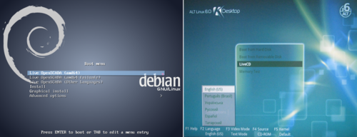
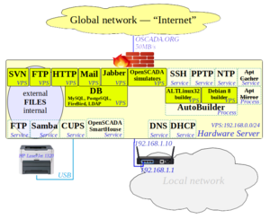
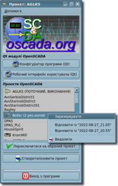
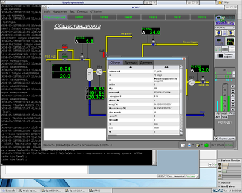

1 Вступ
Реліз OpenSCADA, відкритої SCADA(Supervisory control and data acquisition) системи, версії 0.9 є стабільним промисловим релізом тривалої підтримки (LTS).
Основною метою релізу є надання оновленої та стабільної платформи побудови рішень комплексних систем автоматизації та інших суміжних рішень для співтовариства користувачів та розробників вільного програмного забезпечення. Також, реліз призначено стати актуальним та міцним підґрунтям у побудові комерційних рішень.
Реліз є наступною версією стабільної гілки для якого, протягом тривалого часу, надається технічна підтримка від розробників та забезпечується випуск виправлень у вигляді публічних збірок для основних та стабільних оточень Linux, а також оперативних збірок для власників пакетів технічної підтримки. Життєвий цикл попереднього релізу 0.8.0 LTS припиняється його останнім поновленням, безпосередньо перед першими збірками пакетів 0.9 LTS.
Саме на цій версії відбувся остаточний перехід на схему розробки Work/LTS, тобто, розробка здійснюється у межах робочої версії та на її основі періодично випускаються стабільні релізи, які, своєю чергою та паралельно розробці, оновлюються шляхом зворотнього портування сумісних змін із робочої версії. Ініціюючий перехід відбувся у 2013 році, коли поточною стабільною версію визнано 0.8.0 LTS, а робочою 0.9 Work. Наразі, стабільною версію стає анонсована 0.9 LTS, а робочою 1 Work.
Загалом, нова стабільна версія є результатом шести років роботи з розробки, впровадження у різні рішення, стабілізації та експлуатації OpenSCADA у її робочій гілці, яка наразі випускається поточною стабільною. Весь цей час оновлення для 0.8.0 LTS продовжували випускатися та що буде здійснюватися для анонсованої 0.9 LTS.
Цей документ є узагальненням протоколу змін (ChangeLog), починаючи з нульової ревізії попередньої LTS версії, через її оновлення та закінчуючи поточною. Документ покликано коротко та наочно освітлити нові можливості OpenSCADA. Детально ознайомитися зі змінами можна у файлі "ChangeLog" дистрибутивних пакетів або із першоджерела: http://oscada.org/svn/tags/openscada_0.9/ChangeLog.
1.1 Загальна інформація
Проєкт OpenSCADA засновано Савоченко Романом у 2003 році як вільну реалізація Системи Диспетчерського Контролю та Збору Даних (SCADA) або Людино Машинний Інтерфейс (HMI), на основі її ґрунтовного проєктування протягом 2002 року та досвіду використання і розробки комерційної SCADA-системи до цього.
SCADA або HMI системи загалом призначені та використовуються для здійснення людиною оперативного контролю за роботою складного та відповідального технологічного обладнання та процесів різноманітних виробничих підприємств.
На час анонсу 0.9 LTS, OpenSCADA є розвиненою SCADA/HMI системою, яка доволі широко застосовується як за прямим призначенням, так, завдяки своїй гнучкості, і у багатьох суміжних галузях, та яка із впевненістю може називатися більш загально — динамічна система роботи із даними реального часу.
Номер стабільної версії OpenSCADA менше за одиницю тільки через те, що її метою була заявлена багатоплатформність, досягти якої у запланованому об'ємі планується наступним стабільним релізом з номером 1. Загалом, цілями OpenSCADA є:
- відкритість — переважно GPLv2;
- масштабованість, гнучкість, розширюваність — модульність та внутрішня динамічність;
- виконавча надмірність — резервування;
- доступність — відкриті вихідні тексти; багатомовність; динамічна багатомовність; автоматичне складання архівів, пакетів, живих дисків, ...; складання та виконання на Linux оточеннях у широкому віковому діапазоні, від 2002 року (2009-ALTLinux 6, LP8x81, Fedora 12; 2012-Debian 7) по сучасні;
- надійність — практичне застосування, швидке вирішення проблем;
- безпечність — розподіл прав, SSL;
- багатоплатформність — x86_32, x86_64, ARM, Web, Android, QNX (преадаптовано), MS Windows (заплановано);
- єдиний, уніфікований, зручний та розвинутий інтерфейс користувача — Qt, Web, прозоре та багаторівневе віддалене керування;
- широкий спектр джерел даних — універсальні, плати DAQ та низькорівневі шини, створені у оточені OpenSCADA.
1.2 Застосування
До актуальних галузей застосування, де відоме хоча-б одне впровадження та із коротким переліком яких від учасників проєкту можна ознайомитися за цим посиланням, відносяться:
Із деякими обмеженнями та доробками, значним чином у внутрішньому оточенні користувача, OpenSCADA може використовуватися й у таких галузях:
- керування ресурсами підприємства (ERP);
- Geo-локація та відстеження положення;
- торговельні системи;
- медичні діагностичні системи;
- бухгалтерський облік;
- білінгові системи.
2 Результати попереднього релізу 0.8.0 LTS
Реліз 0.8.0 LTS випущено у квітні 2012 року та протягом цих шести років він отримав 20 оновлень, якими, загалом, виправлено більше 500 помилок та додано багато вдосконалень, які не порушують сумісності бібліотечних БД та конфігурації.
Конфігурація та бібліотечні БД 0.8.0 LTS були загалом заморожені, через великі несумісні зміни у 0.9 Work, для методів запуску OpenSCADA, та недосконалість розповсюдження бібліотечних БД на момент випуску 0.8.0 LTS. Тому, оновлення та перехід на версію 0.9 LTS буде нетривіальним, хоча у 0.9 LTS передбачено все можливе для спрощення цієї процедури. Оновлення-же 0.9 LTS до запланованої у майбутньому 1 LTS вже не буде таким складним і фактично може перетворитися виключно у формальну зміну версії робочої гілки, оскільки тепер планується оновлення всього, включно з бібліотечними БД.
3 Планові завдання релізу
Розвиток OpenSCADA, після попередньої LTS версії та у межах робочої гілки, переважно здійснювався шляхом глибокої стабілізації та через практичну адаптацію з елементами розширення існуючого функціоналу, націлені на надання стабільного та надійного оточення автоматизації промислових та суміжних завдань, а відтак і не існувало чітко визначеного плану. Та за три роки до цього релізу такий план з'явився і склав наступні завдання, що видно із загального плану розвитку:
- Повна ревізія основної документації та підготовка анонсу цього релізу.
- Адаптація до роботи на програмній платформі "Android".
- Перенесення бази знань OpenSCADA, та Wiki-ресурсу документування, на новий рушій із уніфікацією структури під багатомовність із пріоритетом: Англійська, Українська, Російська; та генерації автономної (offline) документації за її зміни.
- Ревізія, актуалізація та деяке розширення Web-модулів OpenSCADA.
- Розширення та адаптація OpenSCADA до прямої роботи із низькорівневими шинами та пристроями на кшталт 1Wire, I2C та реалізація проєкту розумного будинку у власному помешканні.
- Формальне створення та документування проєкту дистрибутиву Linux автоматизації із OpenSCADA.
- Створення автоматизованої системи складання пакетів OpenSCADA.
- Перенесення серверної інфраструктури OpenSCADA на власне обладнання та канал у інтернет.
- DAQ.OPC_UA: Спрощення, збільшення функціональності та перенесення протокольного коду у окрему LGPL v3 бібліотеку.
Ці завдання виконано та деякі деталі щодо них наведено далі.
4 Загальносистемні властивості
Нова стабільна версія OpenSCADA отримала помітні загальносистемні розширення, набула більшої стабільності у роботі та збільшення продуктивності, а також отримала помітні удосконалення графічного інтерфейсу та оточення довкола неї на кшталт: розширеного налаштування, документації, доступної прямо з програми (offline та online), та яку значним чином переглянуто і актуалізовано.
Основну частину документації проєкту перенесено на нову Wiki, на основі MediaWiki, та значний об'єм цієї частини було відревізовано та перекладено на три мови — Англійська, Українська, Російська. Для перенесення було створено процедуру конвертації статей з діалекту рушія WackoWiki на MediaWiki, яку було повністю написано на внутрішній мові OpenSCADA та яку повсякчасно використано для перенесення великого об'єму старої Wiki. Формат автономної (offline) документації було змінено зі статичних PDF-файлів, які не оновлювалися після попередньої LTS версії, на HTML-файли, які динамічно генеруються з актуальної бази знань проєкту (Wiki), а також мають актуальні крос-посилання між сторінками та посилання на online-документацію, для виключно зовнішніх матеріалів. Генерація offline-документації також здійснюється спеціально написаною процедурою на внутрішній мові OpenSCADA, що, разом із процедурою конвертації Wiki-діалекту та комплексного тестування релізу OpenSCADA, є яскравою ознакою потужності та поточного рівня розвиненості внутрішньої мови OpenSCADA.
У межах старої Wiki, після випуску 0.8.0 LTS було додано та оновлено деякі документи, а з перенесенням на нову Wiki, окрім ревізії та перекладу основної частини документації, було здійснено загальну уніфікацію її структури з міркувань: багатомовності (Англійської як первинної мови), логічності організації, зручності перекладу та можливості прибрати дублювання статей з офіційним сайтом, які на разі просто використовуються із Wiki. Окремо відзначимо значно-розширені головні документи:
Первинну мову (Англійську) було повністю відревізовано у оригінальних повідомленнях програми та багато у основних статтях документації-Wiki OpenSCADA, що наразі робить OpenSCADA адекватно сприятливою для аудиторії, що не розуміє вихідних мов — Української або Російської. Та, разом із реалізація у повному обсязі механізму динамічного перекладу, робить можливим побудову на основі OpenSCADA динамічно багатомовних інтерфейсів користувача, що Ви можете, зокрема, побачити на публічно доступному Web-інтерфейсі динамічних моделей ТП: АГЛКС, Котел.
Робочою версією, у основі цієї стабільної, вперше було визначено поняття проєкту OpenSCADA та реалізовано сценарій командного рядку для запуску та створення проєктів OpenSCADA. Безпосередньо перед випуском цієї версії, поняття проєкту OpenSCADA було остаточно закріплено за текою з даними окремого проєкту та конфігураційним файлом OpenSCADA, а реалізацію менеджеру проєкту було інтегровано безпосередньо у OpenSCADA. Відтак, ця LTS версія має розвинуте поняття менеджеру проєктів, що дозволяє гнучко з ними працювати та виключити небезпечну можливість багаторазового запуску із загальними даними одного проєкту.
Робочою версією, також, запроваджено зміну версій модулів за змінами у коді модуля та безпосередньо перед їх вивантаженням до репозиторію вихідних текстів, а відтак, версії модулів OpenSCADA цього релізу наочно відзеркалюють загальний рівень їх розвинутості та стабільності.
 Живі диски дистрибутиву Linux автоматизації проєкту OpenSCADA.
У процесі здійснення робіт над робочою гілкою, у основі цієї стабільної, було запроваджено формування репозиторіїв пакетів дистрибутивів Linux зі збірками OpenSCADA, які до цього надавалися лише як окремі пакети. Що помітно спростило розгортання OpenSCADA та утримання її актуальною. Потім було створено автоматичний складальник цих пакетів, який наразі нараховує до 100 цілей, та що значно спростило випуск оновлень як для робочої гілки так і для цієї стабільної. Відтак, до цієї LTS версії надаються збірки пакетів для основних оточень Linux та всю історію публічних оновлень буде збережено.
До пакетів збірок OpenSCADA надаються також і збірки живих дисків швидкого ознайомлення та розгортання OpenSCADA разом із системним оточенням. Які до цього моменту отримали формальне підґрунтя у вигляді Linux дистрибутиву автоматизації проєкту OpenSCADA.
 Основний сервер OpenSCADA.
Збірки та пакети OpenSCADA супроводжуються низкою відкритого та вільного матеріалу внутрішнього оточення програми, а саме, це: напрацювання шару збору та обробки даних, елементи графічного представлення та цілі-комплексні проєкти моделей ТП. Ці матеріали надаються у вигляді файлів БД SQLite та включають:
- Бібліотеки функцій (OscadaLibs), "LibsDB/OscadaLibs.db" — містить всі напрацювання проєкту OpenSCADA у шарі збору та обробки даних включно з елементами джерел даних користувацького протоколу.
- СВУ: Головні бібліотеки (vcaBase), "LibsDB/vcaBase.db" — містить основні елементи графічного представлення та елементи мнемосхем проєкту OpenSCADA.
- СВУ: Тести (vcaTest), "LibsDB/vcaTest.db" — містить елементи тестів примітивів графічного представлення.
- СВУ: Бібліотека електро-елементів мнемосхем користувацького інтерфейсу (vcaElectroEls), "LibsDB/vcaElectroEls.db" — містить елементи графічного представлення компонентів електричних схем.
Хостинг проєкту загалом та матеріалів 0.9 LTS зокрема, було перенесено на власний сервер проєкту, де додатково було розгорнуто: демонстраційні Web-інтерфейси моделей OpenSCADA, проєкт моніторингу серверу та розумного будинку на основі OpenSCADA та складальник пакетів репозиторію OpenSCADA.
4.1 Внутрішні
Роздільну здатність внутрішніх даних цілого типу оточення OpenSCADA збільшено до 64 розрядів. Загалом-же, внутрішні дані OpenSCADA, з резервуванням значення помилки (EVAL) для кожного, уніфіковано загальними типами: логічне, ціле, реальне, рядок та об'єкт. Що в першу чергу стосується джерел даних.
До ядра OpenSCADA, власного протоколу та всіх вузлів що працюють з віддаленими станціями OpenSCADA; додано можливість "підняття" вузлів OpenSCADA, що знаходяться за іншими вузлами та, як правило, у іншій мережі. Що загалом дозволяє централізовано керувати мережею станцій OpenSCADA на будь-якому рівні ієрархії.
4.2 Вдосконалення та адаптація до різних платформ
Ця версія OpenSCADA набула поглибленої підтримки та здібності до адаптації до різноманітних платформ. Це переважно сталося завдяки адаптації до роботи на програмній платформі Android та відновлення збірки і роботи з ucLibC, та що планується використати у подальшій адаптації до роботи на програмних платформах QNX та MS Windows.
Роботу на одноплатних ПК було розширено платами Raspberry Pi та Orange Pi.
Підтримку Linux смартфорнів Nokia доповнено останнім, заснованим на MeeGo 1.2, це — Nokia N9. Або це було оновлення підтримки Nokia N950.
Окрім безпосередньої роботи (нативно) на різних платформах, було значно розширено Web-інтерфейс, який наразі реалізує всі загальні можливості концепції середовища візуалізації та управління (СВУ).
4.3 Оптимізація, стабілізація та продуктивність
Значної стабілізації ядра OpenSCADA, та програми загалом, досягнуто через уніфікацію контролю внутрішніх ресурсів та розширення можливостей налагодження користувачем. Загалом, користувацьку діагностику та налагодження розширено:
- загальним ввімкненням-вимкненням налагодження та цільовим контролем вузлів налагодження;
- особливим налагодженням об'єктів контролерів джерел даних;
- особливим налагодженням виконання проєктів СВУ;
- формуванням поглибленої статистики виконання динамічних об'єктів OpenSCADA, як то: об'єкти контролерів джерел даних та їх параметрів, вхідних та вихідних транспортів, сеансів СВУ з деталізацією до віджетів;
- протоколюванням вхідного та вихідного трафіку транспортів.
Глибокої та всебічної стабілізації притерпіли майже всі модулі OpenSCADA та багато було оптимізовано, з яких особливо треба відзначити:
- Всі модулі БД — додано обробку та перевірку помилок БД або СУБД, та видачу повідомлень про ці помилки у випадку користувацького завантаження та запису; збільшено продуктивність (до порядку) БД що підтримують SQL, через реалізацію режиму предзавантаження сканувального запиту;
- Обчислювач на основі Java-подібної мови (DAQ.JavaLikeCalc) — збільшено продуктивність через: збереження контексту виконання функції, предзавантаження постійних та прямий доступ до рядку.
- Архіватор на БД (Archive.DBArch) — значно оптимізовано запис та читання БД, а саме це: гуртовий запис декількох архівів до однієї таблиці та читання блоками (кратними десяти) у одному запиті.
- Всі транспорти — загально підвищено продуктивність.
- Робочий користувацький інтерфейс (WEB) (UI.WebVision) — збільшено чутливість інтерфейсу використанням асинхронних запитів у загальному циклі оновлення.
Резервування OpenSCADA станцій.
Надійність резервованої станції у масштабі комплексного рішення, точніше збереження даних історії, було вдосконалено розширенням механізму резервування, який потенційно передбачає резервування будь-якої підсистеми та реалізує наразі резервування підсистем "Збір даних" та "Архіви-Історія".
Та, для програми загалом, було виконано низку формальних всебічних тестів, які було попередньо розширено у внутрішній процедурі комплексного тестування релізу OpenSCADA. За підсумком цих тестів було виявлено декілька помилок, які виправлено.
4.4 Збір даних
Користувацька об'єктна модель ядра OpenSCADA.
Враховуючи ключову роль збору даних у програмах такого роду, ця функція, у особі підсистеми "Збір даних" та її модулів, отримала значні вдосконалення, з яких особливо треба відзначити: зміщення акценту у розширені підтримуваних джерел даних з реалізації окремих модулів підсистеми "Збір даних" на системній мові "C/C++", на їх реалізацію у оточені OpenSCADA та на її внутрішній мові — логічний рівень OpenSCADA. Тобто, на логічному рівні OpenSCADA, може та реалізується все, що: для доступу до даних використовує мережу, не потребує використання специфічних бібліотек та функцій та не є дуже складним. Наразі, таким чином реалізовано:

Низькорівневі пристрої підключені до Raspberry Pi.

OpenSCADA на LCD екрані Raspberry Pi.
- Відправлення SMS повідомлень (SMS) та електронних листів (SMTP).
- Джерело Безперервного Живлення (UPS), як об'єкт даних із атрибутами зі значеннями.
- Прості сенсори та давачі:
- Елемер TM510x;
- EDWARDS TURBOMOLECULAR PUMPS (SCU750);
- Sycon Multi Drop Protocol (SMDP);
- Блок живлення турбо-молекулярного насосу (TMP-xx03);
- Вимірювання температури IT-3 (IT3);
- IVE-452HS-02;
- OPTRIS CT/CTL;
- CTR 100, 101.
- Комп'ютер теплового лічильника VKT7.
- IEC-60870-104.
- Тестові реалізації та приклади: DCON, OWEN.
- Шина "One Wire" за допомогою {DS9097,DS9097U} (1W_{DS9097,DS9097}) для чипів: DS1820, DS1820/DS18S20/DS1920, DS1822, DS2413, DS2408, DS2450, DS2438.
- Шина I2C: PCF8591, PCF8574, BMP180, DS3231, AT24C{32|64}.
- Загальні порти ВВ (GPIO): DHT11,22 (AM23XX). GPIO|I2C: 1602A(HD44780).
Враховуючи збільшення ролі логічного рівня OpenSCADA, зросли і вимоги до гнучкості моделі даних джерела даних та загалом, що було задоволено:
- завершенням покриття внутрішньої моделі даних всіма функціями, характерними до галузей застосування;
- доданням ієрархічності до параметрів об'єктів контролерів джерел даних;
- доданням можливості довільного та динамічного формування моделі даних — набору атрибутів параметрів.
Внутрішня мова програмування OpenSCADA набула значних удосконалень та, наразі, задовольняє всім вимогам галузей застосування OpenSCADA. Багато з цих удосконалень потрапили до попередньої версії 0.8.0 LTS, та низка не могла туди потрапити через порушення зворотньої сумісності або недостатньої стабільності на той час. З цих, суттєвих вдосконалень, треба ще раз відзначити: збільшення роздільної здатності даних внутрішнього оточення OpenSCADA цілого типу до 64 розрядів та збереження контексту виконання внутрішніх процедур.
4.5 Графічне оточення
 Діалог обрання проєктів OpenSCADA.
Користувацький контроль вигляду інтерфейсу Qt.
Загалом, графічне оточення отримало значний розвиток та головним з них стало розширення модуля запуску Qt-інтерфейсу, як підґрунтя для решти локальних. В першу чергу, цей модуль та ядро OpenSCADA адаптовано для можливості запуску бібліотеки графічного середовища Qt у основному потоці програми, що виключило багато проблем, пов'язаних із виконанням у неголовному потоці, а також забезпечено роботу з версією 5 цієї бібліотеки. По друге, цей модуль взяв на себе роль інтерфейсу обрання проєктів OpenSCADA при її запуску та перемиканні, а також створення нових. І по трете, через його первинність до запуску Qt, він отримав функцію керування виглядом програми незалежно від графічного оточення та можливість його запуску-закриття у системний лоток. Що загалом зробило можливим налаштування OpenSCADA під персональні вимоги користувача та адаптовувати її до дуже специфічних оточень на кшталт Android.
Помітних удосконалень отримали модулі конфігурації Qt та Web, де особливо треба відзначити:
- Конфігуратор-Qt (UI.QTCfg): здійснення запитів до віддалених станцій у окремому потоці від потоку Qt, що зробило його зручнішим та більш прогнозованим та що навіть, разом з одним із оновленням, потрапило до попередньої стабільної версій 0.8.0 LTS.
- Конфігуратор-WEB (UI.WebCfgD): загалом, був повністю оновлений на предмет інтерфейсу, який наразі є більш динамічним, зручним та може бути розширений темами.
Помітних вдосконалень також отримало середовище візуалізації та управління (СВУ), у складі всіх його модулів:
- Рушій СВУ та модулі візуалізаторів загалом (UI.VCAEngine):
- дозволяє здійснювати повноцінну-гарячу розробку, тобто — редагування проєкту СВУ на момент його виконання сеансами;
- оригінальні повідомлення інтерфейсу є цілком відкориговано, граматично та орфографічно коректними для Англійської мови;
- надано низку додаткових видів примітиву "Елементи форми", "Діаграма" та розширено примітив "Text" відображенням "HTML";
- надано механізм специфічних до візуалізатору атрибутів віджетів, що дозволило розкрити та використовувати їх індивідуальні властивості;
- новий-гнучкий механізм повідомлень користувача про позаштатні події у контрольованому системою процесі, який передбачає можливість вільного формування користувацьких сповіщувачів з потрібними властивостями, як то: моно-тоновий сигнал, синтез мови.
- Візуалізатор-Qt (UI.Vision):
- помітно покращено роботу з виконання віддалених інтерфейсів та забезпечено здійснення запитів до віддаленої станції у окремому потоці від потоку Qt, що спростило віддалену розробку із паралельним виконанням проєкту;
- формування примітиву "Документ" може здійснюватися за допомогою WebKit.
- Візуалізатор-WEB (UI.WebVision):
- уніфіковано, оптимізовано та розширено використанням CSS3;
- надано реалізацію всіх елементів-примітивів уніфікованого інтерфейсу;
- здійснюється масштабування до доступного простору вікна браузеру;
- збільшено продуктивність роботи та чутливість інтерфейсу, через використання виключно асинхронного механізму при оновлені.
Всі Web-модулі, загалом, набули можливість зміни вигляду за посередництва тем, через загальносистемні інтерфейси модуля протоколу HTTP та його механізми обробки запитів і формування відповідей. Також, всі вони отримали підтримку динамічного перекладу інтерфейсу, що особливо актуально для багатокористувацьких Web-інтерфейсів та з чим Ви можете ознайомитися на демонстраційних Web-інтерфейсах моделей OpenSCADA: АГЛКС, Котел. Додано також механізм розподілу доступу до сторінок, який, зокрема, дозволяє розмежувати доступ до Web-модулів загалом.
5 Нові та значно оновлені модулі
У новій версії було додано нові модулі та значним чином оновлено низку чинних:
- Додано нові модулі:
- MMS(IEC-9506) (DAQ.MMS) — модуль підтримки обміну даних за протоколом "Manufacturing Message Specification (MMS, IEC-9506)".
- Comedi (DAQ.Comedi) — модуль підтримки джерел даних реального часу (бібліотека "Comedi"), які основані на платах збору даних різних виробників та встановлюються на шинах: ISA, PCI, PCMCIA та USB.
- SMH2Gi (DAQ.SMH2Gi) — модуль реалізації доступу до апаратних модулів джерел даних ПЛК Segnetics SMH2Gi,SMH4 для "MC", "MR", а також взаємодії із оригінальним оточенням "SMLogix".
- Fastwel IO (DAQ.Fastwel) — модуль обміну даними з апаратними модулями Fastwel IO.
- FT3 (АПСТМ) (DAQ.FT3) — модуль обміну даними з контролерами АПСТМ, АСДКУ, СУАП.
- GPIO (DAQ.GPIO) — модуль доступу до GPIO одноплатних ПК на кшталт Raspberry Pi, Orange Pi та інші.
- Обчислювач на основі Java-подібної мови (DAQ.JavaLikeCalc) розширено: підтримкою внутрішніх функцій, динамічним перекладом повідомлень та багатьма іншими функціями інтерфейсу користувацького програмування загалом.
- Шлюз джерел даних (DAQ.DAQGate) розширено шлюзуванням повідомлень, пов'язаних із обраним джерелом даних.
- Збір даних ОС (DAQ.System) розширено джерелами даних: "Файлова Система", "ДБЖ", "QSensor" та можливістю відокремленням повільних джерел від швидких.
- ModBus ({DAQ,Protocol}.ModBus) розширено підтримкою рядка, як послідовності значень регістрів.
- Клієнт DCON (DAQ.DCON) значно розширено підтримкою специфічних модулів.
-
Ролі OpenSCADA як OPC-UA сервер.
- Обладнання ICP_DAS (DAQ.ICP_DAS) значно розширено, а фактично повністю переписано, підтримкою всіх наявних плат збору даних від фірми ICP_DAS для серії I8k, I-87k, на шині ISA та уніфіковані типи для стандартних модулів серії I7k.
- Siemens S7 ПЛК (DAQ.Siemens) значно розширено власною реалізацію ISO-TSAP.
- Diamond плати збору даних (DAQ.DiamondBoards) значно розширено, а фактично повністю переписано, підтримкою всіх наявних плат збору даних від фірми Diamond Systems.
- Пристрої АСКО (DAQ.AMRDevs) реалізовано підтримку лічильника Контар (МЗТА).
- Всі модулі БД значно розширено динамічним перекладом.
- Архіватор на БД (Archive.DBArch) розширено архівацією декількох архівів у одну таблицю та відновленням переліку архівів із інформації у БД.
- Архіватор на ФС (Archive.FSArch) додано підтримку проміжних типів "Int16", "Int32", "Int64", "Float", "Double" та доповнено абсолютним обмеженням розміру архіву на диску.
- Всі модулі транспортів розширено режимом пулінгу вхідних транспортів та протоколів.
- Сокети (DAQ.Sockets) розширено підтримкою шини RAWCAN та ініціативним підключенням вхідного транспорту.
- Послідовний інтерфейс (Transport.Serial) розширено підтримкою низькорівневої шини I2C; спеціальними користувацькими функціями послідовного інтерфейсу: "sendbreak", "TS", "DR", "DCD", "RI"; розширеним керуванням RTS для RS-485.
- Шар безпечних сокетів (Transport.SSL) розширено підтримкою: TLSv1.1, TLSv1.2, DTLSv1.
- Власний протокол програми (Protocol.SelfSystem) розширено ієрархічним та багаторівневим спрямуванням запитів до зовнішніх хостів.
- HTTP (Protocol.HTTP) розширено адаптивністю до інтерфейсів користувача у системних діалогах та наданням загального API побудови HTTP-інтерфейсів як для користувача, так і модулям за ним.
- Програмний конфігуратор (Qt) (UI.QTCfg) запити інтерфейсу керування OpenSCADA винесено до окремого потоку та покращено реалізацію елементів контролю.
- Програмний конфігуратор (Динамічний WEB) (UI.WebCfgD) розширено новим дизайном з використанням CSS3 та можливостей сучасних WEB-браузерів.
- Концепція і рушій середовища візуалізації та керування (UI.VCAEngine) розширено: підтримкою специфічних до візуалізатору атрибутів віджетів, реалізацією нового-гнучкого механізму повідомлення користувача, фоновим (у окремому потоці) виконанням задачі формування документів, збільшенням кількості трендів на одному кадрі до 100 та підтримкою логарифмічної шкали примітиву "Діаграма".
- Робочий користувацький інтерфейс (Qt) (UI.Vision) розширено: для роботи у мережі через сервер візуалізації; реалізацією групи специфічних до цього візуалізатору атрибутів; реалізацією видів "Дерево", "Таблиця" та розширенням виду "Кнопка", примітиву "Елементи форми"; реалізацією виду "XY" примітиву "Діаграма"; значним рефакторингом коду примітиву "Елементарна фігура".
- Робочий користувацький інтерфейс (WEB) (UI.WebVision) розширено використанням CSS3 та можливостей сучасних браузерів, зокрема: додано масштабування до доступного простору вікна браузеру, реалізовано всі примітиви уніфікованого інтерфейсу.
- Бібліотека функцій системного API середовища користувацького програмування (Special.FLibSYS) розширено функціями та об'єктами: "floatExtract", "md5", "tmSleep", об'єкт "IO"; значно розширено чинні функції та об'єкти: "dbReqSQL", "FFT", "strParse", "strDec4Bin".
6 Висновки
На шляху до нового релізу 0.9 LTS промислового призначення здійснено велику роботу по стабілізації, розширенню функціональних можливостей, а також розширенню адаптаційних можливостей до роботи на альтернативних платформах. Все це загалом ще більше розширило межі повноцінного застосування OpenSCADA на всіх рівнях систем промислової автоматизації та суміжних напрямків автоматизації та автоматики.
LTS версії OpenSCADA не є порожнім звуком, вони реально підтримуються весь час, до наступної LTS версії, та підтримку цієї версії ще буде розширено сервісними оновленнями. Також, буде здійснено зміщення акценту та політики впровадження LTS версії, яка до цього рекомендувалась до оновлення конфігурацій із замороженими бібліотечними БД, на пріоритет у використанні на широкому спектрі нових рішень.
 Предадаптація OpenSCADA до роботи на QNX.
У появі нової промислової версії OpenSCADA 0.9 LTS прийняли участь:
- Роман Савоченко: основний об'єм робіт по розробці, тестуванню, збірці, документуванню та перекладу програми і документації трьома мовами.
- Максим Кочетков: реалізація модулів DAQ.Fastwel, DAQ.FT3; розширення модуля Transport.Sockets підтримкою RAWCAN та модуля Transport.Serial розширеним керуванням RTS для RS-485.
- Арсен Закоян: реалізація підтримки лічильників електроенергії "Меркурій 200" та "Меркурій 230".
- Руслан Ярмолюк: реалізація підтримки лічильнику електроенергії NIK 2303.
- Алмаз Каримов: розширення модуля реалізації протоколу DCON.
- Аркадій Кисіль: реалізація підтримки I2C сенсору температури, барометричного тиску та вологості BME280.
- Константин (IrmIngeneer): підтримка складання OpenSCADA на дистрибутиві Linux Gentoo.
- Сергій Дорошка: попередня адаптація OpenSCADA до роботи на QNX.
- Організації, що сприяли найбільш значущому вдосконаленню OpenSCADA через її інтеграцію до власних систем керування:
- Proviron Holding NV: придбання пакетів технічної підтримки для загальної підтримки, виправлення та покращення реалізації протоколу Siemens ISO-TSAP(ProfiNet), деяких напрацювань довкола Raspberry Pi, 2014, 2016-2018.
- Лабораторія вакуумних технологій: "Вакуумна технологічна установка", 2011-2018, та фінансування обладнання серверу OpenSCADA, 2014.
- Оптима: "Система Автоматизації Метрополітену", 2016.
- Вектор: придбання пакетів технічної підтримки для виправлення та покращення реалізації OPC-UA у роботі з різними OPC-UA клієнтами та серверами, 2015-2016.
- Краматорськтеплоенерго+ДІЯ: "САУ кульових барабанних млинів ШБМ 287\410 котлоагрегату №8 БКЗ 160–100 ПТ", 2015, та "САУ Фосфатування, Амінування та Гідразину котлоагрегатів БКЗ 160–100 ПТ", 2014. У якості ПЛК використано ICP-DAS LP-8781 із OpenSCADA у ролі середовища виконання ПЛК.
- Хартрон: "Система Контролю Реактивності (СКР) Ядерної Підкритичної Установки (ЯПУ)", 2013-2015.
- Багато інших організацій та окремих користувачів, що побажали залишитися анонімними, через придбання технічної підтримки та послуг, конструктивні відгуки впровадження та експлуатації.
Подальші зусилля розробки буде спрямовано на:
- Завершення ревізій основної документації, переважно по модулям та бібліотекам.
- Чітке визначення та оновлення політики надання комерційних послуг довкола проєкту OpenSCADA:
- перегляд та оновлення умов пакетів технічної підтримки;
- політика та організація збірок оновлень до стабільної гілки: збереження історії всіх публічних оновлень та організація сервісних;
- дистрибуція виключно комерційних збірок із публічними демонстраційними на прикладі пакетів для Android — розробка та формування механізму контролю за терміном пакету технічної підтримки та демонстраційного режиму.
- Освоєння та адаптацію до галузі "Керування ресурсами підприємства (ERP)" із спрямуванням на:
- створення інтерфейсу керування ресурсами на сервері проєкту;
- створення загального інтерфейсу контролю задач та їх фінансування, з організацією розробників до залучення виконання цих задач та технічної підтримки.
- Розширення функцій застосування у галузях "Розумний будинок", "Домова автоматика" та "Побутові роботи".
- Адаптацію до роботи в оточені операційних систем QNX та MS Windows.
7 Оновлення
7.1 [14.06.2021] ЧЕТВЕРТЕ оновлення
Це оновлення релізу 0.9 LTS виправляє біля 45 помилок та додає деякі удосконалення, які цілком ви можете почитати у протоколі змін оновлення.
 Важливі дії користувача за оновленням
Важливі дії користувача за оновленням
- FIX:SYS: Загальне конфігураційне поле "WorkDir" попереджено від маркування як модифіковане при перемиканні проекту, чим і від збереження у конфігураційному файлі, але відсутній механізм автоматичного видалення цього поля із конфігураційного файлу старих проектів.
- => видаліть вручну загальне конфігураційне поле "WorkDir" якщо воно з'явилося там помилково та ви маєте проблеми використання тек чужих проектів цим проектом.
Нові та значно оновлені частини
- Ядро OpenSCADA: 3:9:0 => 3:10:0
- (ревізія механізму перекладів)
- Підсистема "Транспорти" OpenSCADA: 17 => 18
- {DAQ,Protocol}.OPC_UA,libOPC_UA: 1.7 => 2.1, 1.10 => 2.1, 1.2 => 2.1
- (доповнено реалізацією сервісу Publish, підтримкою шматків (CHUNKS) на клієнтській частині Збору Даних та загальним переглядом коду у цьому процесі)
- DAQ.ModBus: 2.12 => 3.1
- DAQ.DAQGate: 2.2 => 2.3
- DAQ.Siemens: 3.5 => 3.6
- Transport.Sockets: 4.2 => 4.3
- Transport.Serial: 2.5 => 2.6
- Transport.SSL: 3.2 => 3.3
- UI.WebCfgD: 1.5 => 2.0
- UI.VCAEngine: 6.9 => 7.1
- UI.QTStarter: 5.8 => 5.9
- UI.QTCfg: 5.1 => 5.4
- (загальний перегляд та переробка таблиць)
- (загальний перегляд та переробка таблиць в Qt загалом та вигляду Таблиця примітиву FormEl СВУ)
- (загальний перегляд та переробка таблиць вигляду Таблиця примітиву FormEl СВУ)
- LibsDB.OscadaLibs.DevLib.IEC62056: 1.0 => 1.1
- LibsDB.vcaBase.Main: 2.0 => 2.1
- storeHouse: 1.0
- RootPgSo: 2.3 => 2.4
OpenSCADA бібліотеки та проекти
- LibsDB.vcaBase,AGLKS.vca: Main.RootPgSo: Доповнено щодо:
- віджету "alarms" на основі примітиву "Протокол" із можливістю ввімкнути/вимкнути;
- додання опціональної функції повернення до типового користувача після визначеного часу неактивності у атрибуті "defUser";
- перемкнено до невідносного алгоритму обчислення вертикальної позиції та висоти головної мнемосхеми.
- LibsDB.OscadaLibs: DevLib.IEC62056: Переписано у синхронний режим (запит-відповідь) для роботи декількох пристроїв на одній послідовній шині.
- LibsDB.vcaBase:
- Бібліотеку "Основна" доповнено новою сторінкою реалізації "Складу (storeHouse)".
- Main.RootPgSo: Періодичність виконання кадру піднято до 1000 мілісекунд після додання раннього опрацювання подій. Значним чином перемкнено із клавіатурних послідовностей "Ctrl+?" на "CtrlAlt+?".
- AGLKS.vca: Сторінку проекту /prj_AGLKS/pg_so/pg_4/pg_mn/pg_1 перейменовано у /prj_AGLKS/pg_so/pg_4/pg_mn/pg_CM101 на кшталт із рештою.
API
!!!!:Зміни:
- SYS: Функцію TSYS::curTime() доповнено аргументом визначення джерела годинника із використанням функції clock_gettime(). Визначення EVAL_RFlt доповнено суфіксом "f".
- Mess: Функцію перекладу TMess::translSet() доповнено аргументом "srcFltr" фільтрації за джерелами.
- Транспорти: Функцію протоколу ВВ pushLogMess() доповнено аргументами "data" та "dataDir".
Доповнення:
- Mess: Блокування даних відокремлено від блокування всіх повідомлень у dtRes.
- SYS: Функції API користувача доповнено функцією lang() швидкого отримання системної мови.
- Доповнено функцією TSYS::curTimeN().
- .,DAQ.{LogicLev,ModBus,Siemens}: Доповнено та використано глобальну постійну DAQ_APER_FRQ представлення частоти аперіодичних викликів, на кшталт f_start, періодичних процесів.
- Безпека: Об'єкт користувача доповнено функцією Користувацького API auth() для автентифікації за паролем.
- Транспорти: Вхідні та вихідні об'єкти транспортів доповнено атрибутами протоколу ВВ: "mLogLstDt", "mLogLstDtTm".
- DAQ: Об'єкт DAQ-параметру доповнено інформаційним полем мітки часу зміни із його максимальним значенням на об'єкті контролеру, за допомогою нового конфігураційного поля БД "TIMESTAMP" об'єкту параметру.
Система
- FIX:Складання:configure.ac: Версію бібліотеки ядра збільшено до 3:10:0 та версію програми збільшено до 0.9.4.
- Повідомлення вихідного тексту та документація програми:
- rom_as@oscada.org замінено на roman@oscada.org всюди у вихідних.
- Документ "Modules/OPC_UA" цілковито відревізовано для версії модулів 2.1 та перекладу.
- Вкладку "Переклади" дещо відревізовано, доповнено актуальним статусом, доповнено контекстною допомогою та менеджер перекладів доповнено щодо:
- обмеження часу формування таблиці за prmInterf_TM (7 секунд);
- конфігураційного поля пропуску кількості верхніх повідомлень;
- встановлення перекладу лише до фільтрованих джерел;
- перевірка вмісту на збіг лише для фільтрованих джерел;
- пропуск помилок відсутності джерел.
- Функцію перекладу TMess::translSet() попереджено від розповсюдження групових повідомлень, змінених не із менеджеру перекладу.
- FIX:.,BD.LDAP,Archive.{DBArch,FSArch},DAQ.{ModBus,MMS},{DAQ,Protocol}.OPC_UA,UI.Vision: Дещо очищено від попереджень складання.
- FIX: Визначення EVAL_RFlt доповнено суфіксом "f" для попередження помилкового порівняння double EVAL_RFlt зі збереженим float значенням, виправляє роботу архіватору Archive.FSArch із типами значень float у виявлені EVAL.
- FIX:Mess: Блокування даних відокремлено від блокування всіх повідомлень у dtRes для запобігання конкурентним блокуванням при активній роботі із перекладами. Атрибути mLang2CodeBase, mLang2Code перемкнено на це нове блокування.
- data/openscada-proj.in: Перемкнено у посилання вмісту Користувацької LibsDB на системні бібліотеки, зі змістом лише на читання, замість копіювання.
Збір Даних
- ModBus,Siemens: Перемкнено, у формуванні значення "f_frq", на використання інформації реального виконання завдання.
- {DAQ,Protocol}.OPC_UA.{.,libOPC_UA} : Доповнено реалізацією сервісу Publish, підтримкою шматків (CHUNKS) на клієнтській частині Збору Даних та загальним переглядом коду в процесі цього:
- КЛІЄНТ:
- додання атрибутів (елементів моніторингу) пересунено із attrPrc() безпосередньо до enable() та яка запускається при запуску об'єкту контролеру
- ... та опрацювання елементів покращено оновленням опису, прапорців та зв'язування;
- збір даних уніфіковано опрацюванням у функції параметру upVal()
- ... та запиту значень функцією об'єкту контролеру getValMIt() із підтримкою Масивів
- ... чим впритул приготовано до вбудування логічного типу параметрів;
- об'єкти параметрів Збору Даних активовано для включення інших параметрів;
- встановлення та видалення EVAL до всіх атрибутів перевірено у всіх режимах;
- структурні змінні, у оглядачі обрання DAQ-параметру, дозволені до обрання їх елементів окремо;
- розбір переліку змінних DAQ-параметрів встановлено у цілковитий розбір із пропуском порожніх рядків;
- об'єкт DAQ-контролеру доповнено закриттям сеансу та безпечного каналу при його зупинці;
- загальний статус об'єкту контролеру доповнено деталізованою інформацією щодо використаного каналу безпеки, сеансу, підписки та опрацьованими елементами моніторингу;
- блокування запиту перейменовано у resOPC.
- СЕРВЕР:
- об'єкт OPC-UA Серверу доповнено вкладкою загального статусу серверу із інформацією щодо активності каналів безпеки;
- об'єкт Вузла EndPoint доповнено загальним статусом із інформацією щодо активності сеансів та підписок, а також періодичністю і часом виконання завдання підписок.
- БІБЛІОТЕКА:
- уніфіковано у визначені типового значення часу життя каналу безпеки, який встановлено у 300000 мс;
- типовий LifeTimeCounter підписок встановлено у 2400;
- об'єкт NodeId доповнено функцією прямого порівняння operator==();
- функцію XML_N::childClear() доповнено результатом повернення того самого об'єкту XML_N для поєднання;
- функцію curTime() доповнено аргументом визначення джерела годинника із використанням функції clock_gettime();
- короткі функції доповнено str2int() та str2uint();
- деякі поля перейменовано: publInterv у publInterval, cntrLifeTime у lifetimeCnt, cntrKeepAlive у maxKeepAliveCnt, maxNotPerPubl у maxNtfPerPubl, en у publEn;
- виправлення слова "POOL" на "POLL".
- БІБЛІОТЕКА_КЛІЄНТ:
- Client::reqService() доповнено мета-командою "CloseALL" закриття поточного сеансу та каналу безпеки;
- функцію опрацювання клієнтських сервісів protIO() адаптовано до роботи у асинхронному режимі (не запит);
- функцію Client::messIO() розширено аргументом таймауту із визначенням також режиму запиту;
- запис до каналу та читання із нього відокремлено у обробці MSG пакетів;
- адаптація повідомлень безпеки до роботи зі змішаним вхідним буфером;
- переміщення основного сервісного запиту "OPN" під опрацювання повідомлень через надсилання оновлень всередині Publish активності.
- реалізовано сервіс Publish на боці клієнту:
- об'єкт "Client" доповнено реалізацією підоб'єкту "Subscr" (але зберігається у Client::SClntSess) із функціями: activate(), monitoredItemAdd() та monitoredItemDel();
- об'єкт "Client" доповнено функцією poll() із:
- уніфікацією читання значень у обох режимах Read та Publish;
- перевіркою втрати всіх Publish запитів протягом OpcUa_ClntPublishResentCntr(2) спроб-часу збереження живим;
- відновлення пулу Publish.
- об'єкт Client::Subscr::MonitItem додано як представник елементів моніторингу із доступом з під загального блокування клієнтських ресурсів;
- сервісні запити доповнено реалізацією, включно із опрацюванням відповідей: CreateSubscription, DeleteSubscriptions, CreateMonitoredItems, Publish, Poll;
- реалізовано та перевірено у підтримці безпечних політик за Publish;
- цільовий пул Publish запитів на підписку встановлено у віртуальній функції publishReqsPool() із типовим значенням 2.
- доповнено реалізацією шматків (CHUNKS) як у запитах, так і відповідях;
- цілковито відревізовано та очищено загальну функцію запиту reqService() від дублікатів аргументів та параметрів:
- доповнено відновленням сеансів при перепідключенні каналу безпеки;
- уніфіковано очищення поточного сеансу та каналу безпеки.
- об'єкт клієнту доповнено загальним блокуванням ресурсів mtxData;
- властивість повідомлення "timeoutHint" встановлено у 0 для всіх повідомлень;
- запит Read повернуто до "плаского" запиту із обмеженням лише у CHUNKS;
- помилку OpcUa_BadSecureChannelIdInvalid додано до очищення каналу безпеки;
- Client::SClntSess::{sessOpen,lstMessReq} перейменовано у {secChnlOpenTm,secLstMessReqTm}
- ... та попереджено від очищення і відновлення сеансу та каналу безпеки;
- доповнено налагоджувальними повідомленнями помилок запитів.
- БІБЛІОТЕКА_СЕРВЕР:
- серверну частину адаптовано до роботи із UAExpert 1.5 щодо: встановлення атрибуту AId_Descr DAQ-значення у тип OpcUa_LocalizedText, додання декларації цілочисельного типу OpcUa_IntAuto та OpcUa_UIntAuto;
- опрацювання підписок повернуто до їх опрацювання у окремому завдання та функції subScrCycle() щодо:
- правильного рахування всіх таймаутів для вимкнення;
- опрацювання періодичності підписки та публікації;
- перевірки стану пов'язаних сеансів та каналів безпеки щодо закриття підписок.
- але публікацію залишено на опрацювання у активності вхідного каналу та функції Server::EP::publishCall() із попередженням опрацювання Publish для помилкових та чужих Підписок, через перевірку inPrtId, sesTokId та isSecCnlAct;
- уніфікація Сеансу щодо: пов'язання сеансів із каналами безпеки переключено на один замість масиву, перевірку сеансу всіх повідомлень доповнено попередженням використання чужих підключень;
- не останні шматки пакету переключено на відправку прямо, щоб не додавати до одного TCP-пакету;
- EP::mtxData блокування переключено у PTHREAD_MUTEX_RECURSIVE;
- канали безпеки обмежено кількістю OpcUa_SecCnlLimit(10) та чергу публікацій кількістю OpcUa_ServerMaxPublishQueue(10);
- EP::secSize() перейменовано у EP::secN() та додано EP::sessN(), EP::subscrN() і chnlList();
- Server.SecCnl.{TokenId,TokenIdPrev} перейменовано у Server.SecCnl.{tokenId,tokenIdPrev}.
- ModBus: Вихідна частина RTU варіанту протоколу доповнена раннім перериванням очікування пакетів стандартних функцій [ERR,1...6,15,16], що збільшує загальну пропускну спроможність удвічі.
- ВВ параметрів Логічного Рівня увімкнено до перекладу, для не пов'язаних рядків та на кшталт до DAQ.LogicLev.
- Розбір атрибутів Збору Даних перемкнуто на використання TSYS::strLine() та TSYS::strParse(), чим дозволено символ ':' у назві та порожні рядки у тексті.
- DAQGate: Режими синхронізації доповнено режимом запобігання синхронізації загалом для об'єктів збережених у кеші, шляхом дозволу значення -1 конфігураційного поля "Період синхронізації з віддаленою станцією, секунд".
Архіви-Історія
- FIX:FSArch: Критично виправлено опрацювання файлів архіву значень, при спробі запису їх ІД до нульового рядку.
- DBArch: Архіватори повідомлень доповнено конфігураційним полем "Унікальні та недублюючі повідомлення лише за часом та категорією".
- FIX: Виправлено падіння при опрацюванні груп архіватору значень через неочищення зв'язування конфігурації полів таблиці (TConfig) під блокуванням та неблокування функції ModVArch::grpLimits() у reqRes.
Транспорти
- Протокол ВВ, у вхідній та вихідній частинах, розширено та доповнено:
- комбінуванням даних пакетів з однаковим напрямком та адресою даних протягом prmWait_TM (5 секунд);
- мікросекундну частину часу зафіксовано у 6(шістьох) символах;
- повідомлення даних доповнено символом спрямування;
- обмеженням розміру одного блоку опрацювання новим конфігураційним полем;
- значним підвищенням продуктивності, через використання передвизначеного буферу.
- FIX:Serial: Вихідний транспорт виправлено у очікуванні між запитами щодо опрацювання reqRetrMult*wCharTm як мілісекунди.
- FIX:Sockets: Виявлено помилку "Обрив каналу (32)" при запису, після від'єднання серверу, тож спроби перепідключення встановлено у 2 за (kz <= 0).
Інтерфейс Користувача
- FIX:Загальний перегляд та переробка таблиць в Qt і Web загалом та вигляду Таблиця примітиву FormEl СВУ:
- QTStarter,QTCfg,Vision: Загальний бібліотечний клас TableDelegate значним чином покращено у роботі на QTCfg та Vision:
- доповнено власними користувацькими ролями SelectRole, TextLimRole та OneLineString;
- відображення клітинок доповнено фоновим кольором через читанням-застосування загальних ролей;
- чисельні типи (ціле та реальне) доповнено примусовим центруванням;
- строкові типи доповнено опціями вирівнювання та завертанням слів із ролі Qt::TextAlignmentRole;
- доповнено підтримкою візуального обмеження довгих текстів власною роллю TextLimRole та типове значення встановлено у 300 символів через додаткове перевизначення sizeHint().
- FIX: Вигляд "Таблиця" примітиву "FormEl":
- VCAEngine,QTStarter,Vision,WebVision: Доповнено новим типом клітинки 't'-текст, переважно для можливості підтвердження редагування типу 's'-рядок натисканням Enter.
- VCAEngine,Vision,WebVision: Доповнено опцією "prec" простору стовпчика, рядка та клітинки для контролю точності реальних значень; та реалізацією атрибуту "align" стовпчика та клітинки.
- WebVision,Vision: Доповнено перемиканням таблиць у запобігання подвійному зберіганню вихідного вмісту за його розміру більш ніж 10000.
- FIX:Vision: Використання загального делегату таблиці із можливістю багаторядкового редагування.
- Вдосконалено відображення стовпців, рядків та клітинок при оновлені та загалом:
- обмеженням візуального розміру вмісту клітинки 300 символами та висоти рядків у 70% від загального розміру таблиці;
- більш точним вирівнюванням ширини стовпців;
- підлаштуванням у режимі розробки, а також при видимості вертикального заголовку;
- щільним заповненням таблиці через врахування розміру видимої смуги вертикального гортання;
- підлаштуванням лише після цілковитої зміни розміру таблиці, чим також дозволивши ручну зміну стовпців та для надання такого-правильного підлаштування завжди.
- Реалізовано "легке" опрацювання зміни ширини та оновлення:
- "легке" редагування без перепідлаштування стовпців за кожного оновлення, лише за: появи першого рядка, зміни кількості стовпців та зміни заголовку стовпця, зміни шрифту та зміни розміру;
- застосування фіксованої ширини стовпця та вирахування висоти рядків із обмеженнями незалежно від значення загального атрибуту "colsWdthFit";
- встановлення значення, рання зміна розміру та підлаштування таблиці, перенесено у простір наявності вмісту таблиці та після сортування.
- Функцію експорту під час виконання доповнено експортом виду Таблиця примітиву "FormEl" у CSV.
- Вдосконалено відображення стовпців, рядків та клітинок при оновлені та загалом:
- реалізацією режиму не підлаштування (відсутність атрибуту "colsWdthFit"), з використанням режиму автоматичного розміщення таблиці для обчислення фіксованої ширини та наступного перемикання у фіксований режим розміщення таблиці;
- багаторядковим редагуванням тексту клітинок у повну ширину та висоту клітинки, із застосуванням редагування за Ctrl+Enter;
- вигляд строкових клітинок обмежено 300 символами;
- відображення логічних клітинок зображенням стану TRUE;
- клітинки таблиці, у режимі редагування, дозволено до виклику контекстного меню системи-браузеру.
- Реалізовано "легке" опрацювання зміни ширини та оновлення:
- виявляння змін таблиці та оновлення перемкнуто у режим не зберігання вихідного вмісту двічі;
- попереджено від цілковитого оновлення за модифікації атрибуту "value".
- Доповнено підтримкою сортування за стовпцями. Встановлення у сортування за першим видимим стовпчиком при ввімкнені сортування.
- WebCfgD: Розширення таблиці щодо:
- великий видимий вміст тексту обмежено 300 символами;
- строковий тип дозволено до багаторядкового редагування використовуючи TEXTAREA;
- тип даних "bool" відображено зображенням, не "On" або "Off";
- центрування вмісту логічного, чисел, часу та обрання;
- спрощення редагування вмісту таблиці для типів час, число та рядок, через видалення кнопок застосування та прокручування.
- QTStarter,QTCfg,Vision: Розпочато перенесення спільного Qt-коду Qt-модулів OpenSCADA до файлів нової бібліотеки lib_qtgen.*, яку розташовано у теці модуля QTStarter та прив'язано у всіх Qt-модулях, та це здійснено для: зовнішній icoSize(), colorAdjToBack() та TableDelegate.
- VCAEngine:
- Доповнено, та увімкнено як опція складання, щодо механізму маркування змін атрибутів без дублювань, через запит попередніх-завершених циклів, чим також запобігаючи необхідності виявлення дублікатів у візуалізаторах та зберігання великого початкового вмісту.
- Виконання проектів покращено при зміні батька опрацьовуваних сторінок на льоту.
- Виконання завдань сеансів доповнено раннім виконанням, за наявності подій.
- FIX: СВУ-стилі виправлено при доступі до порожніх полів, які не завантажуються.
- Сторінку "Діагностика" СВУ-проектів адаптовано до відображення повідомлень рівня налагоджування при ввімкнені налагодження.
- Інформацію виконання сеансу проекту доповнено реальною періодичністю, отриманою від завдання, яку також використано при формуванні значення атрибуту "f_frq" процедури.
- Vision: Діалоги властивостей "Віджети" та "Проекти / Бібліотеки віджетів" доповнено власним рядком статусу та кнопкою виклику контекстної документації. Віджети TextEdit перемкнуто на власний рядок статусу діалогів властивостей, щодо позиції курсору та що вимкнено у Вигулькній Підказці. Віджет редагування тексту коду діалогу властивостей "Віджети" доповнено відновленням позиції курсору після застосування або скасування.
- FIX:WebVision: Доповнено виявленням зникнення сеансу виконання проекту та поверненням помилки, у загальному запиті "pgOpenList", та скидання лічильнику обчислень "tmCnt".
- Клавіатурний фокус та події значним чином покращено щодо гарантування роботи цього загалом через:
- встановлення атрибуту "tabindex" для всіх активних віджетів та специфічно для FormEl — безпосередньо у елементи форми;
- доповнення обчисленням числа "tabindex" як унікальний для цілого інтерфейсу, чим запобігаючи стрибкам фокусу;
- опрацювання події onfocus щодо встановлення власного фокусу у setFocus();
- вигляд Кнопка примітиву FormEl доповнено опрацюванням клавіатурних подій натискання та відпускання за клавішами Space та Enter;
- примітив Діаграма спрощено через видалення зайвого елементу тегу A;
- FIX: Виправлено перемикання фокусу при клацанні на кнопках із зображеннями.
- FIX: Виправлено перевірку видалених віджетів для всіх та головної сторінки.
- FIX: Виправлено нарешті множення зайвих DIV елементів при зміні сторінки у контейнері сторінок.
- FIX: Запобігання зациклюванню за наявності Web-сеансу, але відсутності відповідного СВУ-сеансу.
- FIX:WebCfgD: Цілковито відревізовано та розширено щодо:
- перенесення всіх дій внутрішніх інструментів до реалізації кнопками та розмір панелі інструментів встановлено із 25 в 30 пікселів;
- видалення фільтрації-зміни розміру зображень кнопок інструментів на боці серверу;
- встановлення відстані між іконкою сторінки та заголовком у 10 пікселів;
- цілковитого оновлення контрольованої сторінки після зміни розміру вікна;
- розширення поля загального редагування тексту TEXTAREA застосуванням та скасуванням із клавіатури;
- пов'язання функції оновлення хостів до подвійного клацання мишею на загальному просторі області дерева;
- FIX: виправлення функції оновлення хостів щодо виявлення елементів дубльованих хостів;
- FIX: примусового позначення актуальних-обраних елементів у дереві контролю після його розгортання;
- видалення nodeText() та setNodeText() через безпосереднє використання "innerText" та "textContent".
7.1.1 Сервісні оновлення
7.2 [20.12.2020] ТРЕТЕ оновлення
Це оновлення релізу 0.9 LTS виправляє біля 40 помилок та додає деякі удосконалення, які цілком ви можете почитати у протоколі змін оновлення.
Linux Дистрибутив Автоматизації проєкту OpenSCADA
- пакети "tdelibs" та "tdebase" було видалено через застосування цих виправлень до головної та стабільної гілки TDE;
- виправлені пакети "tdemultimedia-trinity", "tdenetwork-trinity" та "tdeutils-trinity" було перескладено;
- складено новий виправлений пакет "tde-i18n-uk-trinity";
- перед складанням пакетів було змінено схему формування версій пакетів цього дистрибутиву із "{+1}:14.0.9-0" на "4:14.0.9-{+1}" з метою запобігання заморожуванню цих пакетів на наступних версіях TDE; та головний репозиторій пакетів TDE Живих Дисків переключено на гілку "r14.0.x" замість попередньої стабільної, яка також наявна, але закоментована;
- перед цим релізом, у TDE Weblate завершено переклад Українською частин-пакетів TDE: tdelibs, tdebase, tdegraphics, tdenetwork, tdemultimedia, tdepim, tdeadmin, tdeaccessibility, tdeutils, krusader, yakuake, basket; та створено виправлений пакет "tde-i18n-uk-trinity" для перекладу відмінностей гілки "r14.0.x" від головної;
- латку до "tdeutils" доповнено комбінацією клавіш із утриманням Ctrl для повільної зміни яскравості дисплею до KMilo.
OpenSCADA бібліотеки та проєкти
- FIX:LibsDB.OscadaLibs: Бібліотеку DevLib доповнено шаблонами "MTP 4D (MTP4D)" та "ModBus база (mbBase)".
- FIX:LibsDB.vcaBase: Шаблонний проєкт (tmplSO) очищено від зайвих мнемосхем керування рецептами та головну сторінку доповнено таблицею актуальних сигналів-порушень. Кадр Main.RootPgSo уніфіковано сповіщувачами лише у загальних атрибутах для СВУ-серверу та сповіщувачів Vision, WebVision: notify0, notify1 та notify2.
API
!!!!:Зміни:
- Архіви-Історія: {TMArchivator,TVArchivator,TVArchive}::DB() встановлено у кваліфікатор постійної.
- Транспорти.{.,*}: Функцію встановлення таймаутів setTimings() вихідних транспортів розширено розрізненням типових таймаутів для різних протоколів, за допомогою аргументу "isDef".
Доповнення:
- SYS.,*:
- Обмеження та параметри простору системи перенесено до простору конфігурації користувача (конфігураційний файл) для деякого дозволеного діапазону. STD_WAIT_DELAY перенесено до prmWait_DL та змінено у 0.1 секунд. Попередні визначення обмежень та параметрів простору системи залишено для сумісності зовнішніх модулів!
- TSYS доповнено функцією taskSendSIGALRM() надсилання сигналу переривання "ALARM" до завдань OpenSCADA.
- TValFunc: Доповнено станом виконання функції через функцію isCalc().
- Транспорти: Вихідні транспорти розширено позначенням Мережевих транспортів, функцією isNetwork(), також у користувацькому API.
Система
- FIX:Складання:configure.ac: Версію бібліотеки ядра збільшено до 3:9:0 та версію програми збільшено до 0.9.3.
- {DAQ,Протокол}.ModBus:
- підтип "_b" — бітовий тип, доповнено переміщенням номеру біту до поля номеру регістру на кшталт "R_b:123.12";
- доповнено прапорцем "~" для інверсії порядку регістрів комплексних підтипів у декількох регістрах, як то "_f";
- прапорець "rw" виокремлено у "r" та "w".
- Модульну версію підсистеми "Транспорти" збільшено до 17.
- FIX: Попереджено від автентифікації у інтерфейсі користувача готовим хешем паролю.
Збір Даних
- LogicLev,ModBus,Siemens: Доповнено перериванням тривалого виконання шаблонів при вимкнені параметру, з використанням нових функцій TValFunc::isCalc() та TSYS::taskSendSIGALRM().
- FIX:LogicLev: Видалено блокування виконання "calcRes", яке використано лише у блокуванні запису до параметру протягом обчислення та що може бути тривалим.
Архіви-Історія
- FIX: Отримані поточні значення, у активному режимі архівування, примусово встановлено у поточний час, що важливо для архівування динамічних атрибутів.
- Конфігураційне поле архіву значень "Режим формування ID атрибуту автоматично створюваних архівів" розширено елементом обрання "Всі ID контролеру, параметру та атрибуту", у процесі розширення обмеження на розмір ІД архіву значень до 50 символів.
- FIX:DBArch: Виправлено лише пряме архівування значень у груповому режимі та коли тип значень може скидатися у Цілий тип, як типовий. Архівування значень у груповому режимі доповнено видаленням відповідного стовпчика таблиці при видалені архіву, для гарячого видалення стовпчиків одразу після додання нового архіву, чим запобігаючи ранньому розростанню таблиці до обмежень БД.
- FIX:FSArch: Адаптація до розміру ІД архіву значень більш за 20 символів, коли додаткові 14 символів зберігаються у резервній частині (перейменованій у "archive_add") заголовку та решта у назві фалу.
Транспорти
- FIX: Функція TTransportIn::assTrO() опрацювання вхідних ініціативних підключень цілковито відревізовано задля забезпечити обов'язковим створення нових підключень у вигляді нового вихідного транспорту, відтак запобігаючи правильному завершенню наявних закритих але не звільнених вихідних транспортів.
- Команди транспортів перейменовано із "Виконання" у "Підключення" та статуси перейменовано із "Запущено. " у "Отримання даних. " та "Підключено. ", із "Зупинено. " у "Відключено. ".
- FIX:{Sockets,SSL}: Типові таймаути повернено у "10:1".
Транспортні Протоколи
- HTTP:
- Доповнено динамічною назвою печива (cookies) та Користувацьким простором ІД, де назва печива "oscd_UID" і використано Користувацький простір ІД при роботі із загальною таблицею сеансів автентифікації, та назва печива "oscd_UID_{PrjNm}" при роботі без цього.
- FIX: POST вихідної функції outMess() з багатьох частин попереджено від розміщення кінцевого розмежувача та покращено у формуванні "Content-Disposition".
- Покращено генерацію ІД користувача генерацією різних ІД для різних процесів, обмежене у 1e6, та доповнено випадковим та конфігурованим Користувацьким простором ІД [0...99] * 1e6, використаним у роботі із таблицею загальних сеансів автентифікації.
- SelfSystem: Специфічні таймаути вихідного транспорту встановлено у "20:2".
- ModBus: Специфічні таймаути вихідного транспорту встановлено у "5:0.1" для Мережевих транспортів — isNetwork() та варіанту протоколу "RTU".
Інтерфейс Користувача
- FIX: TUIS::docKeyGet() виправлено щодо витоку користувацьких об'єктів масивів.
- VCAEngine,WebVision,Vision: Примітив "Media" доповнений типом "Audio" та тип "Повне відео" перейменовано у "Відео", який також імплементовано у WebVision та Vision.
- QTCfg,Vision: Доповнено функцією підлаштування кольорів тексту до фонового кольору — colorAdjToBack(), яку використано у корекції кольорів підсвітлення синтаксису, та інших динамічних кольорів, до зміни палітри.
- VCAEngine,Vision: Розширено реалізацію сповіщень у процесі їх впровадження у WebVision, щодо:
- використання стандартного шляху отримання сповіщень через активацію відповідних атрибутів;
- розширення ntfReg() використанням негативного типу для опрацювання всіх типів, переважно очищення, та деякої уніфікації коду;
- розширення отриманням типу ресурсу;
- доповнення сповіщувачів прапорцем "notifyServ" ввімкнення сповіщення на боці СВУ-серверу;
- доповнено, на боці СВУ-серверу, полем "resStatic" прямого визначення ресурсу (не динамічне);
- доповнення контексту процедури сповіщення двома змінними "resTp" та "prcID".
- FIX:UI.QTStarter: Доповнено періодичним оновленням діалогу запуску у переліку проєктів.
- FIX:VCAEngine: Виправлено падіння при встановленні посилання віджету у "prm". Сервіс запиту ресурсу "get:/wdg/res", Widget::resourceGet() та {WidgetLib,Project}::mimeDataGet() доповнено запитом частин ресурсу, переважно для великих медіа файлів.
- FIX:Vision: Доповнено програванням сповіщень внутрішнім програвачем на Phonon та не у окремому завдані сповіщувача. Виклик saveState() переміщено із деструктору вікна розробки до події закриття, оскільки було помічено проблему збереження порожнього контексту після програвання деякого медіа.
- FIX:WebVision:
- Імплементація підтримки сповіщень.
- Імплементація завантаження частин ресурсів, для великих медіа, HTTP параметром "Range: bytes=".
- FIX: Виправлено зайве очищення кешу сторінки щодо віджетів із сторінок із спільною назвою до сторінки що видаляється.
- WebUser: Адаптовано до роботи із POST та вмістом у тілі.
7.2.1 Сервісні оновлення
7.3 [17.08.2020] ДРУГЕ оновлення
Це оновлення релізу 0.9 LTS виправляє біля 60 помилок та додає деякі удосконалення, які цілком ви можете почитати у протоколі змін оновлення.
Linux Дистрибутив Автоматизації проекту OpenSCADA
- Завершено вдосконалення KMix щодо роботи із PulseAudio, шляхом його динамізації патчем "kmix-UpdMixersForChangeAndChMaster.patch".
- KRfb (VNC-сервер) було виправлено стосовно аварійного завершення та завершено реалізацію набору додаткових клавіш до основної клавіатурної розкладки, переважно Кирилиці, але також і додаткових UTF символів.
- Завершене оновлення перекладу проекту Оточення Стільниці Trinity Українською для частин: tdelibs, tdebase, tdenetwork, tdemultimedia, tdepim (переважно), krusader, yakuake.
OpenSCADA бібліотеки та проекти
- LibsDB.OscadaLibs: Бібліотеку Пристроїв доповнено реалізацією протоколу IEC-62056 (DevLib.IEC62056). Позамережеву документацію доповнено документом "УГОДА ПРО ТЕХНІЧНУ ПІДТРИМКУ ПРОГРАМНОГО ЗАБЕЗПЕЧЕННЯ "OpenSCADA" версії 2 та нового модуля DB.DBGate.
- FIX:LibsDB.vcaBase.Main.alarmsSt: Дещо виправлено щодо оригінальних повідомлень та "quietation" цілковито замінено на "confirmation". Відновлено попередження дубльованих записів нових порушень у тій самій категорії.
API
!!!!:Зміни:
- SYS: Уніфіковано статуси станції у функціях isRunning(), isFinalKill() та stopSignal(). TCfg::setReqKey() доповнено новим аргументом "treatDep".
- DB: dataSeek(),dataGet(),dataSet(): Розширено аргументом локального конфігураційного контексту "localCfgCtx";
- *,DB: TBDS::dataSeek() та TTable::fieldSeek() переключено до реалізації кешу сканування у відповідних модулях.
Доповнення:
- TMess,DB,DB.{SQLite,MySQL,PostgreSQL,FireBird}: TMess доповнено функцією виявлення перекладу конфігурації translCfg(), яку використано у всіх модулях БД та у dataSet().
- SYS: Доповнено функціями доступу до глобального конфігураційного контексту cfgCtx() та setCfgCtx().
- Завантаження та збереження конфігурації доповнено власним блокуванням TSYS->cfgLoadSaveM().
- Доповнено функцією pathLevEnd() опрацювання шляхів із кінця.
- TRegExp: Доповнено функцією getPattern().
- TFld: Доповнено комбінованим строковим варіантом поля довжини - lenS().
Система
- FIX: Складання:
- FIX:configure.ac: Версію бібліотеки ядра збільшено до 3:8:0 та версію програми збільшено до 0.9.2.
- Модульну версію підсистеми "БД" збільшено до 14, підсистеми "Транспорти" збільшено до 16.
- data/ModelsDB/{AGLKS/oscada_AGLKS.xml,Boiler/oscada_Boiler.xml}: Вхідні транспорти Сокетів уніфіковано у назвах "WEB" та "CNTR".
- data/ModelsDB/AGLKS/St.sql: Вхідні транспорти SSL уніфіковано у назвах "WEB" та "CNTR" та оновлено встановленням KeepAlive таймауту в 60 та SSL-сертифікату.
- data/{oscada_start,oscada_server,oscada_plc}.xml:
- Вхідні WWW-транспорти уніфіковано, де "WEB_1" перейменовано у "WEB" та видалено "WEB_2".
- Доповнено вимкненими записами БД стандартних бібліотек OpenSCADA.
- /oscada_start.xml: Доповнено вимкненими вхідними транспортами "WEB" та "CNTR". Доповнено архіваторами значень FSArch.{SYS,alarms,actions} та архіваторами повідомлень FSArch.{1s,1m,1h}.
- FIX:data/openscada-proj.in,UI.QTStarter: Реалізація вбудованого резервування.
- FIX:data/openscada-proj.in: Доповнено командами "backup", "backupRestore", "backupList" реалізації резервування проектів.
- UI.QTStarter: Доповнено викликом команд резервування із менеджеру проектів - переліку проектів.
- .,DB,DAQ.{LogicLev,ModBus,Siemens},UI.{QTCfg,WebCfgD}: Реалізація механізму міжстанційного копіювання вузлів інтерфейсу керування.
- .,UI.QTStarter: Запуск OpenSCADA із GUI модулем у основному потоці значно переглянуто щодо:
- ранньої реєстрації GUI модуля у основному потоці безпосередньо самим цим модулем та у функції postEnable();
- адаптації функції perSYSCall() до використання у оновлені GUI модуля у основному потоці, переважно його заставки (сплешу), протягом запуску і зупинки (із сервісного завдання) та при завантажені конфігурації (для перемикання до заставки запуску);
- увімкнення динамічного відображення повідомлень для режиму виконання у основному потоці;
- уніфікації відображення заставки у обох режимах.
- .,Protocol.SelfSystem,DAQ.AMRDevs: Доступ клієнта до інтерфейсу керування OpenSCADA розширено множинною автентифікацією, що попереджає використання прямих запитів до інтерфейсу керування OpenSCADA із автентифікацією у кожному запиті, часто у UI.Vision.
- FIX:TRegExp: Виправлено обробку шаблонів, доданням опрацювання символу кінця, таким чином попереджаючи колізії чіткого визначення об'єктів у TController::alarmSet().
- FIX:LibsDB.OscadaLibs.doc.diagram,UI.{Vision,WebVision}: Попереджено подвійне підлаштування шкали значень для процентної шкали та доповнено розширенням діапазону значень.
- FIX: Опрацювання нащадків у функції TCntrNode::isModify() дозволене лише для вузлів у стані "Ввімкнено".
БД
- Створено новий модуль "DBGate".
- FIX: TBDS::dataSet() розширено встановленням лише ключів та видимих елементів, на кшталт інших БД. Доповнено зміною-збереженням визначених елементів у конфігураційному файлі замість цілковитого збереження всіх їх у типовій БД.
- FIX: Виправлено перший помилковий запуск об'єктів БД стосовно наступних спроб запуску.
- FIX: Завантаження БД попереджено від подвійного завантаження із конфігураційного файлу та БД, стосовно однакових записів.
- Об'єкт TBD доповнено підтримкою сервісних контрольних запитів "call": "/serv/SQL", "/serv/fieldStruct", "/serv/fieldSeek", "/serv/fieldGet", "/serv/fieldSet", "/serv/fieldDel".
- FIX:SQLite: Виявлено та виправлено втрату даних за конкурентного доступу, коли генерується непринципова помилка неактивованості транзакції "cannot commit - no transaction is active (1)", яка, однак, перериває запис даних.
Збір Даних
- FIX: JavaLikeCalc: Виконання внутрішніх функцій доповнено збереженням контексту спільних-власних регістрів, у двох варіантах, первинно для підтримки рекурсії.
Транспорти
- Вихідні транспорти уніфіковано створенням параметрів підключення, за допомогою conPrm(), замість прямих prm1() та prm2().
- Видалено конфігураційний параметр "START" вихідних транспортів, як зайвий та для запобігання тривалому запуску.
- FIX:Sockets,SSL: Для запобігання багаторазовому виконанню запитів високого навантаження та тривалого контролю, вихідні транспорти перемкнуто на:
- типову конфігурацію для Спроб=1, Таймаути="30:2";
- для втрат підключень кількість спроб встановлено у 2;
- для помилок "Вичерпано час" підключення також пере-підключається, окрім типу SOCK_FORCE.
Транспортні Протоколи
- FIX:ModBus: Вихідні запити TCP-варіанту доповнено перевіркою Ідентифікатору Транзакції пакетів відповіді.
- FIX:SelfSystem: Вихідну частину розширено перевіркою відповідності відповідей до запиту, за назвою тегу запиту. Доповнено кодуванням спеціальних символів користувача і пароля, та порожній пароль кодується як "<EMPTY>".
Інтерфейс Користувача
- Vision,WebVision: Властивість специфічну до візуалізатору "userSetVis" доповнено реалізацією пароля після прямо визначеного користувача та для застосування з усіма користувачами.
- FIX:QTStarter: Стандартну-системну заставку запуску/зупинки оновлено та доповнено інформацією про програму (також користувацькі заставки) та проекту OpenSCADA, включно із іконкою проекту. Контекстне меню переліку проектів доповнено пунктом видалення невиконуваних проектів.
- FIX:QTCfg: Доповнено стеженням за зміною сторінки із індикацією у дереві навігації та з гортанням до поточного елементу.
- FIX:VCAEngine: Попереджено аварійне завершення на великих конфігураціях із тривалим закриттям сеансів виконання під час доступу до спадкоємців віджету (mHerit), доданням ResRW блокування "mHeritRes". Властивість "Переклад" процедур віджетів цілковито пересунуто до прямого доступу та видимість встановлено лише за наявності процедури, так само як видимість простору тексту процедури та періодичності обчислення від обрання мови.
- FIX:Vision: Суттєво уніфіковано процедуру автентифікації та зміни користувача у UserStBar::userSel() та об'єкт діалогу "DlgUser".
- FIX:WebVision: Уніфіковано імплементацію примітиву "Кнопка": перенесенням специфічних кнопок під <button></button> та доданням відповідних CSS-стилів для типового та натисненого стану із відмінною границею та напівпрозорим зображенням. Виправлено нарешті проблему закриття всіх сторінок контейнеру основних сторінок із заморожуванням останньої втраченої сторінки за швидкого перемикання. Доповнено користувацькими CSS правилами інтерфейсу.
7.3.1 Сервісні оновлення
7.4 [08.04.2020] ПЕРШЕ оновлення
Оновлення здійснено за 1.5 роки від релізу 0.9 LTS, відтак воно варте 10 оновлень, оскільки ним виправлено близько 250 помилок та додано багато вдосконалень, які цілком ви можете почитати у протоколі змін оновлення.
Ключовими властивостями оновлення є:
- значне розширення та стабілізація Web-інтерфейсу протягом практичної експлуатації у великому розподіленому рішенні, побудованого на основі модуля UI.WebVision; також розширення та стабілізація гарячої розробки протягом множинного виконання розроблюваного проекту;
- тестування, виправлення та розширення резервування у частині повідомлень, також завдяки практичній експлуатації у великому розподіленому та ще й резервованому рішенні, у частині загально-системного коду та модуля DAQ.ModBus;
- цілковита реструктуризація, вдосконалення та доповнення бібліотек OpenSCADA у SQLite файлах;
- загальне покращення документації, доповнення документацією всіх бібліотек та ревізія більшості документації модулів.
7.4.1 OpenSCADA бібліотеки та проекти
- FIX:DB.LibsDB.{OscadaLibs,vcaBase}: Оновлення перекладу.
- FIX:JavaLikeCalc.doc,doc: Бібліотеку користувацького інтерфейсу "Документи" та JavaLikeCalc "Бібліотека звітів та документів" відревізовано, покращено, доповнено, документовано та документацію додано до offline.
- FIX:doc: {docUsersSet,docAlarmsRep,docMessRep}: Поле "Параметр" перейменовано у "Джерело", у процесі глобальної уніфікації структури повідомлень порушень функції alarmSet().
- Доповнено реалізацією "Річний звіт місячних значень (docRepYear)" із функцією введення значень у ручному режимі, підтримкою збереження ручних значень у архіві повідомлень, їх відображення у таблиці та діаграмі.
- {doc,docDin,docRep2WorkSh(перейменований docRepSm2),docAlarmsRep,docRepInstVals(перейменований docGasNodeMgn),docMessRep,docUsersSet, docRepDay(перейменований docGasNodeDayA),docRepMonth(перейменований docGasNodeMonthA),docRepYear(перейменований docResourcesYear)}: виконано JavaLikeCalc переклад у tr().
- {docRepInstVals,docRep2WorkSh,docRepDay,docRepMonth}: Значним чином переписано, покращено та зроблено повторно-використовуваним, дозволивши підключення DAQ-параметрів.
- docMessRep: Доповнено опрацюванням віддалених станцій лише як додаткове джерело та завжди.
- JavaLikeCalc.doc: Доповнено реалізацією побудови "Діаграми (diagram)" у SVG.
- PrescrTempl,prescr: Бібліотеку інтерфейсу користувача та шаблонну бібліотеку "Рецепти" відревізовано, покращено, доповнено, документовано та документацію додано до offline.
- PrescrTempl: Доповнено шаблоном "Менеджер", перенесеного із бібліотеки контролерів.
- prescr: Елементи бібліотеки розширено лінкуванням БД та автоматичним створенням таблиць команд та програм.
- DB.LibsDB.vcaElectroEls: Бібліотеку інтерфейсу користувача "Елементи електрики" відревізовано, покращено, доповнено, документовано та документацію додано до offline.
- Доповнено чотирма уніфікованими елементами: "Ключ, уніфікований (keyUnif)", "Перемикач, уніфікований (swUnif)", "Загальний стан, уніфікований (stGenUnif)", "Стан області, уніфікований (stAreaUnif)".
- FIX:DB.LibsDB.OscadaLibs:
- Оновлено щодо деяких повідомлень.
- FIX:base: Бібліотеку шаблонів "Основна бібліотека" відревізовано, покращено, доповнено, документовано та документацію додано до offline.
- {anUnif,anUnifSt,manInUnif,digAlarm,codeState,pidUnif,pidUnifImp,SNMP,UPS}: Переведено на уніфікований механізм формування та контролю порушень.
- Доповнено шаблоном "initConsAssignTrs" опрацювання вихідних транспортів ініціативних підключень Сокетів для будь-яких типів джерельних об'єктів, як то DAQ-модулі та контролері і параметри логічного рівня.
- Доповнено шаблоном "codeState" формування стану за кодом.
- Доповнено реалізацією складного сповіщувача у шаблоні "ntf", окрема JavaLikeCalc функція та об'єкти користувацьких протоколів "SMS" та "SMTP" позначено застарілими.
- Доповнено шаблоном "UPS", перенесено із бібліотеки "Промислові пристрої".
- FIX:DevLib: Шаблонна бібліотека є відокремленою частиною оригінальної бібліотеки "Пристрої" під назвою "Промислові пристрої", яку відревізовано, покращено, доповнено, документовано та документацію додано до offline.
- FIX:IEC60870: Доповнено окремим часом "tmPoolAll" періодичності повного опитування.
- Доповнено підтримкою пакетів M_ME_TF_1, M_ME_NC_1, розширено підтримкою SQ-режиму, перевірено M_ME_TF_1 та M_ME_NC_1, M_ME_NB_1 у SQ-режимі, AI встановлено у "реальний" тип.
- Доповнено опцією "syncTimePLC" контролю синхронізації ПЛК.
- Доповнено правильною реалізацією DCON у шаблонах DCON_Prt, DCON_Prt_DI, DCON_Prt_AO, DCON_Prt_DO, об'єкт користувацького протоколу "DCON" видалено.
- Доповнено повнофункціональною реалізацією протоколу OWEN у частині збору даних.
- Доповнено реалізацією DNP3 та її випробувано з outstation-demo із opendnp3.
- Доповнено реалізацією модулів лічильників Pulsar-M (pulsarM).
- Доповнено реалізацією сканеру ModBus, як шаблон "ModBusScan".
- LowDevLib: Шаблонна бібліотека є відокремленою частиною оригінальної бібліотеки "Пристрої" під назвою "Низькорівневі пристрої", яку відревізовано, покращено, доповнено, документовано та документацію додано до offline.
- FIX:{1W_DS9097,1W_DS9097U}: Виправлено визначення родини пристрою як шаблон 0x7F, виявлено на останніх DS2413 із першим байтом 0xBA.
- Доповнено реалізацією шаблону "MAX6675", низькорівневого SPI Конвертору K-Термопар-у-Цифру Компенсації-Холодних-Спаїв.
- Доповнено реалізацією шаблону "SHT3x", низькорівневого сенсору вологості.
- Доповнено реалізацією шаблону ADS111x(ADS101x) та MCP4725, низькорівневих I2C-чипів.
- FIX:JavaLikeCalc.techApp: JavaLikeCalc бібліотеку "Технологічні апарати" документовано та документацію додано до offline. Всі Кирилічні символи видалено із ідентифікаторів моделей та всі тексти відкориговано.
- tests: Бібліотеку шаблонів "Тести" перейменовано із бібліотеки "S7".
- JavaLikeCalc.servProc: JavaLikeCalc бібліотеку "Сервісні процедури" відревізовано, дещо покращено, доповнено, документовано та документацію додано до offline.
- docOffLine: Значно розширено деталізацією повідомлень про помилки та розташуванням незавершених сторінок у аргументі "pagesCur" для продовження переривань.
- JavaLikeCalc.regEl: JavaLikeCalc бібліотеку "Елементи регулювання" документовано та документацію додано до offline.
- FIX:DB.LibsDB.vcaBase:
- FIX: Цілковите і значне очищення від Кирилічних символів та вдосконалення оригінальних ідентифікаторів і повідомлень, із перейменуванням їх Англійською.
- Більшість стандартних кадрів та віджетів адаптовано до стилів та створено стиль "Світлий" для всіх проектів.
- FIX:Main: Бібліотеку інтерфейсів користувача "Основні елементи" відревізовано, покращено, доповнено, документовано та документацію додано до offline.
- FIX:{alarmsAct,alarmsSt}:
- Розширено підтримкою квітації-підтвердження, коментарями та користувацькими полями.
- Поле "Параметр (prm)" перейменовано у "Джерело" де розташовано всі віддалені та локальні джерела.
- RootPgSo: Вдосконалено динамічним створенням об'єктів сигналізації, кількість яких обмежена лише загальною довжиною назв об'єктів сигналізації та їх двома рядами. Підтримується також генерація кнопок об'єктів сигналізації праворуч від логотипу. Типи відображення також уніфіковано ідентифікаторами "view[1..6]", коли користувач може їх призначити у власний спосіб. Сумісність із оригінальними назвами видів збережено для наявних проектів!
- Доповнено:
- панеллю-вікном контролю "Обчислення параметру графіку (graphCalc)";
- об'єктним віджетом "Властивості об'єкту (objProps)";
- кадром порушень "Порушення — звіт (alarmsStReport)";
- віджетом "Мітка зображенням (ImgLab)";
- кадром "Менеджер користувачів (userManager)".
- grph_panel: Доповнено незалежною кнопкою перемикання на час курсору замість непрямого перемикання при зменшені глибини.
- ElViewGraph: Розмір шрифту назви зменшено із 15 до 11 та колір тренду відображуваних елементів по замовченню встановлено у "gray".
- Кадри рецептів "prescrEdit", "prescrRun" та "prescrRunSimple" винесено до нової бібліотеки "Рецепти (prescr)".
- cntrRegul: Товщину трендів збільшено до 2 пікселів.
- FIX:mnEls: Бібліотеку елементів інтерфейсу користувача "Елементи мнемосхеми" документовано та документацію додано до offline.
- FIX:Model.{AGLKS,Boiler}: Значно оновлено відповідно до загальних змін у бібліотеках.
- FIX: Значно очищено та всі оригінальні ідентифікатори перейменовано Англійською, у процесі ревізії документації.
- FIX: AGLKS.vca,Boiler.St: Адаптовано до нових змін основної сторінки.
- Створено стиль "Світлий" для всіх проектів. Стилі переведено на схему прямого вимкнення стилів за їх наявності замість "Немає стилю" та додано стиль "Типовий".
- FIX:Model.AGLKS:
- FIX:St:
- FSArch.1m: Видалено дивні і тимчасові архіватори: FSArch.{NetRequsts,test,StatErrors}, DBArch.test та додано актуальні: FSArch.{alarms,actions,SYS}, DBArch.SYS.
- FIX:vca: Переприв'язано аналогові параметри та графіки.
7.4.2 API
!!!!:Зміни:
- SYS: Типовий конструктор ResMtx встановлено у true для "isRecurs", оскільки це загальна ситуація.
- Більшість функцій додання до контейнеру вузлів розширено поверненням результуючого ідентифікатора/ім'я створеного вузла для: chldAdd(), TSecurity::{usrAdd(),grpAdd()}, TTypeBD::open(), TTypeTransport::{inAdd(),outAdd()}, TValue.chldAdd(), DAQ.{TController::add(),TParameter::add(),BlockCalc.blkAdd()}, TTypeArchivator::{messAdd(),valAdd()}, TArchiveS::valAdd(), UI.VCAEngine::{wlbAdd(),prjAdd(),WLib.add(),Project.add(),Project.Page.pageAdd()}, UI.WebUser.uPgAdd().
- TFld::Selected всюди перейменовано у TFld::Selectable.
- Варіант спеціальної функції strMess() із обмеженням розміру результуючого повідомлення видалено та замінено функцією strEncode() із типом TSYS::Limit.
- chldList() та chldPresent() зроблено віртуальними.
- DAQ,Special: Атрибут "run_st" у TPrmTmplLib та TSpecial перейменовано у runSt.
- Archives: TArchiveS::messPut() очищено від аргументу "force".
- Protocols.HTTP: Функції користувацького API pgAccess(), pgCreator() перенесено із TProtocol до TProtocolIn.
- Transports.In: Функцію protocol() перейменовано у protocols() та видалено protocolFull().
Доповнення:
- SYS: Додано загальний механізм замків через контейнер замків, функція commonLock().
- TConfig,*: Функції API користувача для конфігурації TConfig::cfg() та TConfig::cfgSet() розширено контролем прав.
- Доповнено функціями TCfg::toDefault() та TConfig::cfgToDefault() скидання конфігураційного контексту до типового.
- Об'єкт TFunction доповнено ознакою зміненості процедури isChangedProg(), та прапорець TFld::Selectable і функція ioAdd() доповнена результатом позиції доданого ВВ.
- Запит Інтерфейсу Керування "load" розширено визначенням обраної БД у атрибуті "force", для здійснення такої операції щодо конкретного вузла.
- XMLNode: Функцію отримання атрибутів attr() розширено опціональним аргументом визначення присутності.
- "Масив (Array)" простору користувача розширено функціями indexOf() та lastIndexOf().
- Функцію API користувача SYS.fileRead() розширено аргументами зміщення та розміру блоку читання.
- Функцію API користувача strEncode() доповнено підтримкою варіантів "ToLower" та "Limit".
- API користувача доповнено функцією strFromCharUTF() формування рядку із UTF-8, UTF-16, UTF-16LE, UTF-16BE, UTF-32, UTF-32LE, UTF-32BE.
- Доповнено визначенням періодичності сервісного завдання SERV_TASK_PER=10.
- API користувача доповнено функцією SYS.fileSize().
- Додано функцію str2atime() для конвертації часу у рядку у час від епохи UNIX з підтримкою GMT.
- TError доповнено назвами кодів помилок у перелічені "Codes", які всюди використано.
- Спеціальні назви архівів доповнено назвою ALRM_ARCH_CH_NM ("<alarmsChange>"), для простої зміни наявних порушень.
- Обмеження доповнено USER_ITS_LIMIT (1000000) для обмеження кількості елементів на кшталт користувацьких масивів із DAQ.JavaLikeCalc.
- DB: Додано контроль закриття транзакцій у ядрі OpenSCADA функціями trTm_ClsOnOpen(), trTm_ClsOnReq() та trPr_ClsTask().
- Додано контроль процесу пере-увімкнення об'єктів БД функцією disabledByUser().
- Доповнено конфігурацією "Час життя відкритих таблиць", для закриттям неактивних таблиць функцією tblLifeTime().
- Атрибут TBD::mEn перенесено до захисного простору.
- Транспорти:
- In: Доповнено віртуальними функціями keepAliveReqs(), keepAliveTm() для правильного KeepAlive на Web.
- Out: Доповнено сервісом закриття вихідних транспортів за часом життя (неактивності), сервісною функцією outLifeTime().
- Розширено полем загального контролю спроб у функції attempts().
- Уніфіковано контролем часу останнього запиту у функції lstReqTm().
- Додано функцію outAddrHelp() для отримання загальної допомоги за адресою модулів вихідних транспортів.
- Protocol.HTTP: Розширено функцією користувацького API setUser() для зміни автентифікованого користувача.
- DAQ: TController::alarmSet() розширено аргументом "force" для примусового встановлення порушень на об'єктах контролерів у резервуванні.
- DAQ-параметри доповнено функцією користувацького API alarmSet() та функцією vlSetRednt() уніфікованого запису значень у резервуванні.
- TDAQS::rdRestDtTm() розширено поверненням double замість float.
- Доповнено функцією користувацького API daqAt().
- Функцію користувацького API funcCall() розширено аргументом "err".
- JavaLikeCalc: Функції користувацького API charAt() та charCodeAt() розширено підтримкою UTF. Функції користувацького API розширено isNaN() для bool, integer, real, string (особливо для перевірки чисел у рядку).
- Архіви:
- Об'єкти TMArchivator та TArchiveS доповнено функцією redntTm() та rdTm() для отримання останнього часу резервування архівів повідомлень.
- TArchiveS::rdRestDtOverTm() розширено поверненням double замість float.
- Архіви значень доповнено загальною опцією autoIdMode() режиму формування Ідентифікатору автоматично створюваних архівів із варіантами перелічення AutoIdMode::{BothPrmAttrId,OnlyPrmId,OnlyAttrId}.
- Val: Додано функції API користувача getVals() та setVals() для реалізації загального механізму доступу до архівів/історії у масиві та із фіксованою періодичністю.
- UI: Декларацію контекстної документації із опису деяких вузлів уніфіковано функцією TUIS::docKeyGet().
- VCAEngine: Додано функцію користувацького API рівня сеансу this.ownerSess().uiCmd(). Віджет виконання доповнено функцією API користувача this.attrList() для отримання переліку атрибутів віджету.
7.4.3 Система
- FIX: Повідомлення вихідного коду та документація програми:
- TMess: Доповнено очищенням змінної оточення LC_ALL та встановленням "LANG" якщо порожнє, для запобігання перевизначенню LC_NUMERIC=C у кінці кінців.
- FIX:.,*: Виправлено багато оригінальних повідомлень вихідного коду також протягом документування більшості модулів.
- FIX:DAQ.JavaLikeCalc: Виправлено переклад JavaLikeCalc коду функцією tr() у створені таблиці перекладу "Trs" та записів там у простому режимі (одна мова).
- Контекстна документація:
- Позамережева документація доповнена деякими модулями OpenSCADA та більшістю бібліотек внутрішніх процедур та графічних елементів. Файл загальних CSS-стилів позамережевої документації "doc/en/files/doc.css" покращено вимкненням прозорого фонового кольору та деякими властивостями обрання мови.
- Уніфіковано декларацією з опису деяких вузлів у функції TUIS::docKeyGet() та додано вузли до цього:
- DAQ-шаблони та JavaLikeCalc бібліотеки;
- СВУ-бібліотеки у UI.VCAEngine та UI.Vision.
- UI: TUIS::docGet() доповнено кодом визначення LTS збірок та використання замороженої LTS документації на OpenSCADA файл-сервері.
- FIX:DAQ.JavaLikeCalc,UI.VCAEngine: Виправлено декларацію позамережевої документації для "User_API".
- FIX: Складання:
- FIX:configure.ac: Версію бібліотеки ядра збільшено до 3:7:0 та версію програми збільшено до 0.9.1.
- Доповнено корінними файловими системами (chroots) Debian 10, CentOs 8 та Ubuntu 20.04 для збірки OpenSCADA.
- Вихідні тексти значно почищено стосовно попереджень складання із GCC 9 (CentOs 8).
- UI.{QTCfg,Vision}: Адаптовано до збірки у оточені Debian 10 щодо Qt5.11.3, GCC8 та помилки стосовно конфлікту макросу message() у StdLibC++ через Qt5.
- Android: Вивчено поведінку використання змінної оточення QT_SCALE_FACTOR на Android, яку встановлено у 1.5 та видалено типовий шрифт "Helvetica,12,-1" разом із CSS-правилами QScrollBar.
- Модульну версію підсистеми "Спеціальні" збільшено до 12; підсистеми "БД", "DAQ", "Архіви" та "UI" збільшено до 13; підсистеми "Транспорти" збільшено до 15.
- FIX: Потоковість, завдання, реальний час та замки:
- Деякі загальні ресурси даних dataRes() замінено власними ресурсами, переважно через спостерігання проблем блокування у Protocol.HTTP та DAQ.ModBus.
- FIX: Додано механізм загальних замків через контейнер замків, функція commonLock().
- FIX: Transport.{Sockets,SSL}: Використано для системних функцій на кшталт getaddrinfo(), які не є багатопотоковими.
- Планування завдань доповнено фазуванням їх виклику, що робить навантаження на процесор рівним.
- FIX: Очікування функції TCntrNode::nodeDis() виправлено для нульового часу та функцію chldDel() встановлено у відсутність очікування по замовченню.
- FIX: Виправлено негативну пріоритетність політики "BATCH".
- Archive,DAQ.Controller: Для поточного часу повідомлень та значень переважно використано TSYS::curTime()/1000000 замість time(NULL) оскільки час повідомлень і значень у мікросекундах та позначено TSYS::curTime().
- FIX: Резервування:
- .,UI.{QTCfg,Vision,WebCfg,WebCfgD}: Функцію "Передача локальних первинних команд" резервованих систем уніфіковано та розширено повним переміщенням до TCntrNode::cntrCmd(), тож функція працює наразі для будь-яких викликів також із оточення програмування користувача.
- Archives,DAQ.DAQGate: Опрацювання верхньої межі часу повідомлень у резервуванні та DAQGate змінено на використання останнього повідомлення для повтору його запиту двічі, щоб запобігти втраті повідомлень на межі.
- FIX: Резервування та DAQ.DAQGate відновлено у записі великих архівних блоків значень, переважно у відновлені ділянок архіву значень.
- Перше отримання порушень у резервуванні повідомлень ввімкнено лише за наявності архіваторів повідомлень у резерві.
- Розміщення повідомлень у архіваторах процедурою резервування TMArchivator::redntDataUpdate() змінено на використання функції put(), для здійснення цієї операції автоматично для всіх отриманих повідомлень під замком.
- DAQ,DAQ.*: Запис значень у резервуванні уніфіковано функцією vlSetRednt(). Сервіс "TValue::get:/serv/attr" розширено дещо зайвим запитом останнього запитаного значення для запобігання EVAL там при втраті з'єднання.
- Функцію strEncode() доповнено варіантом "Limit" для обмеження розміру рядка з урахуванням змінності UTF-8, та наступні елементи переведено на неї, замість видаленого обмежувального варіанту функції strMess(): ключі TConfig, ВВ DAQ-шаблонів, DB.SQLite, UI.QTCfg.
- FIX: Конфігурація:
- TConfig,TCfg: Ключові поля доповнено обмеженням їх розміру перед обрізанням на боці БД.
- *: Функції додання доповнено опрацюванням формування ідентифікатору, або назви, та обмеження їх у розмірі, поверненням результуючої назви ініціатору, з використанням розширення функції вузла chldAdd() до прямого повернення ідентифікатору та простого видалення нового вузла для однакових.
- DAQ: Ідентифікатори ВВ Логічного Рівня DAQ-шаблонів розширено обмеженням розміру до 1.5*OBJ_ID_SZ=30 символів та доповнено їх обрізанням при створені.
- Транспорти: Розмір Ідентифікатору вихідних транспортів встановлено у OBJ_ID_SZ*2, оскільки вони можуть комбінуватися із звичайного ідентифікатору вузла та деякого префіксу, у автоматичному режимі.
- Доповнено функцією встановлення полів TCfg у типове значення, для запобігання завантаженню значень попередніх записів до відсутніх полів.
- TConfig,*: Функції користувацького API для конфігурації cfg() та cfgSet() розширено контролем доступу.
- Завантаження із обраної БД покращено попередньою перевіркою ввімкнення у функції TSYS::chkSelDB().
- TCntrNode,DAQ,DAQ.JavaLikeCalc: Доповнено функцією load__() для опрацювання деяких дій на кінці завантаження.
- Інтерфейс Керування:
- *: Уніфіковано щодо контролю модифікації об'єктів вузлів та очищено зайві модифікації, перенесенням модифікації із контексту виконання під опцію "modifCalc".
- .,UI.{QTCfg,WebCfgD}: Таблиці розширено окремою допомогою за стовпчиками та клітинками.
- Транспорти: Таблицю зовнішніх хостів OpenSCADA розширено контекстною допомогою до клітинки адреси транспорту, використовуючи функцію outAddrHelp().
- DAQ-шаблони та всі їх реалізації доповнено функцією створення атрибутів обрання із другого та третього рядка шаблонного поля "Значення", TFunction::IO доповнено прапорцем TFld::Selectable.
- Завершено уніфіковану реалізацію DAQ-шаблонів — TPrmTempl::Impl, та такі елементи мігровано і адаптовано до неї: DAQ.{JavaLikeCalc,ModBus,LogicLev,Siemens}, Protocol.{ModBus,UserProtocol}, UI.WebUser.
- FIX:DAQ,Archive.DBArch: Реалізовано копіюючий конструктор TElem для виправлення проблем у Archive.DBArch та багатьох груп-таблиць у груповому табличному режимі.
- Function,DAQ.{JavaLikeCalc,LogicLev,ModBus,Siemens}: Розширено стеженням за зміною програми функції та на предмет гарячого перезапуску виконуваних процедур, встановленням прапорця "f_start".
- TMess,XMLNode: Доповнено функцією setUTF8(), формування UTF-8 із їх кодів, взяте із XMLNode для використання у інших місцях.
7.4.4 БД
- FIX:*: Функцію скидання конфігураційного контексту cfgToDefault() використано на початку функції dataSeek() та fieldSeek(), оскільки це обов'язкова операція, що-найменш для конфігураційного файлу, та має також здійснюватися для конфігурації у БД стосовно нових полів.
- Доповнено контролем закриття транзакцій у ядрі OpenSCADA, у сервісному завдані для таймауту > 10 секунд або у окремому на БД завдані швидкого закриття транзакцій спільних СУБД. Для чого додано функції trTm_ClsOnOpen(), trTm_ClsOnReq() та trPr_ClsTask().
- Об'єкти БД доповнено відновленням їх ввімкнення після втрати підключення (або іншої причини) для передбачених до ввімкнення та не вимкнених користувачем, за допомогою disabledByUser().
- Доповнено конфігурацією "Час життя відкритих таблиць", для закриття неактивних таблиць.
- FIX:{SQLite,MySQL,PostgreSQL,FireBird}:
- FIX:{MySQL,PostgreSQL,FireBird}: Вдосконалено та перевірено гаряче відновлення втрачених з'єднань та без втрати даних.
- FIX:FireBird: Відновлено основну роботу у запиті первинних ключів та адаптовано до FireBird версії 3.
- FIX:MySQL: Вирішено із аварійним завершенням у вбудованому перепідключенні (за MYSQL_OPT_RECONNECT), який замінено власним та гарячим перепідключенням. Виправлено помилку "BLOB/TEXT can't have a default value (1)" на сучасних версіях серверу MariaDB, цілковитим видаленням DEFAULT для TEXT.
- SQLite: Доповнено коректним опрацюванням блокування файлів БД SQLite, при доступі до загальних бібліотек із різних процесів.
7.4.5 Збір Даних
- TController::alarmSet(): Розширено імплементацією концепції тригерування порушень, яка передбачає також пропущення порушень до буферу з метою очищення лише за наявності порушень.
- Глобально уніфіковано та цілковито описано у документації стосовно повідомлень із об'єктів контролерів та DAQ-параметрів, коли параметр-джерело у повідомлені доповнюється ім'ям об'єкту контролеру.
- FIX: Змінено на використання повного ID-шляху параметру, для запобігання колізіям у порушеннях від параметрів із однаковими ідентифікаторами, але різними джерелами.
- FIX:*: Властивість period() заздалегідь актуалізовано, при зміні конфігурації "SCHEDULE", для забезпечення коректної періодичності даних архівів.
- Розширено раннім ввімкненням бібліотек шаблонів у процесі завантаження, початково для транспортних протоколів заснованих на DAQ-шаблонах.
- FIX:ModBus:
- FIX: Режим "Асинхронний запис" відновлено та перевірено у записі після відновлення підключення, для використання у попереджені втрат. Асинхронний запис переміщено на після фази запиту із пригніченням-затримкою зміни записаних значень у атрибутах до очищення буферу запису.
- FIX: Виправлено роботу у режимі резервування.
- FIX: Загальну функцію upVal() поділено на дві функції upValStd() та upValLog() для окремого оновлення типів параметрів спочатку "Стандартний" та "Логічний" тип на останок, для випадків використання даних "Стандартного" типу параметрів у "Логічному".
- Розширено роботою із помилковим або порожнім транспортом підключень, щоб забезпечити його зміну із зовнішніх процедур.
- Розширено прапорцем "s" суворого запиту складних даних.
- FIX:JavaLikeCalc: Розширено спробою відновлення виконання попередньої процедури у випадку помилок у новій, переважно із DAQ-шаблонів.
- FIX: Виправлено аварійне завершення при гарячій компіляції, переважно при повернені до коректної процедури після компіляції помилкової, у випадку використання процедурою внутрішніх функцій та можливо і зовнішніх також, через відсутність очищення "fPrmst". Всі ці очищення уніфіковано у функціях buildClear(), workClear().
- Встановлено у зупинку функції при зміні джерела програми, для застосування змін.
- FIX: Попереджено рекурсивних викликів, що спостерігалося на рекурсивному створені віджетів у UI.VCAEngine.
- Siemens: Розширено прямим визначенням типу даних адреси. LibnoDave оновлено до 0.8.5.1.
- DAQGate: Розширено опцією та функцією розміщення різних віддалених контролерів у віртуальних параметрів.
7.4.6 Архіви-Історія
- FIX:Повідомлення:
- /serv/mess: Вдосконалено у вставці, стосовно незалежного запису до архіву та суто для оновлення наявних порушень.
- Повідомлення макросів "message", "mess_info", ... до функції Mess->put() переспрямовано на запис до буферу, для попередження прямого запису до архіваторів.
- TArchiveS::messPut() очищено від аргументу "force".
- FIX:Значення:
- TVArchive::getVals(): Вдосконалено опрацювання невільних буферів (з фіксованою періодичністю) щодо запиту даних із буферу та різних архіваторів, використовуючи проміжний буферний масив, який програється в кінці.
- FIX: Вдосконалено опрацювання обмеження незалежно для буферу, архіваторів та їх періодичності, для роботи запитів даних на великому інтервалі та високій періодичності.
- FIX: TValBuf.get() перемкнено із генерації виключень на повернення EVAL за відсутності запитаних даних.
- Архіватори значень доповнено загальною опцією "Режим формування ID атрибуту автоматично створюваних архівів" із обранням із режимів: "Обидва ID параметру та атрибуту", "Тільки ID параметру", "Тільки ID атрибуту". Для можливості контролю найменування автоматичних архівів.
- TVArchive::{setVals(),setVal()}: Доступ до функцій запису до архіву обмежено лише користувачам у групі "Архів".
- FIX:FSArch: Режим повідомлень у XML доповнено кешем позицій.
- FIX: Архівацію повідомлень значно вдосконалено та виправлено щодо розташування декількох різних повідомлень на один час.
- FIX: Виправлено стосовно видалення info.db та його опрацювання, використовуючи адресу БД як унікальну сутність замість обмеженого ідентифікатору БД, який наразі іменується через індексацію однакових.
- FIX: Створення теки архіву перенесено на початок, до блокування та створення info.db.
- FIX: Виправлено архівацію дубльованих повідомлень у режимі запобігання дублікатам - переписано.
- FIX:DBArch:
- FIX: Виправлено включення архівів значень до архіватору для негрупового типу архівації.
- FIX: Остаточно виправлено запит одиночних значень архіву, після нецілковитого виправлення від 2018-02-23 лише для даних архіватору у періодичності 1 секунда.
- Адаптовано до роботи лише у режимі прямого запису архіву, для групового режиму архівів та щодо оновлення цільової інформації при записі.
7.4.7 Транспорти
- .,*: Розширено підтримкою обрання багатьох протоколів та функцію protocol() перейменовано у protocols().
- Доповнено сервісом закриття вихідних транспортів за часом життя (неактивності) та функцією outLifeTime(), уніфіковане щодо контролю часу останнього запиту функцією lstReqTm().
- FIX:Serial: Виправлено режим "Модем" вихідного транспорту, коректним опрацюванням результату функції ResMtx::tryLock(). Поле керування потоком перенесено до поля опцій через потребу прямого вимкнення деякою опцією на кшталт -RS485.
- FIX:Sockets,SSL: Розширено підтримкою IPv6 як для вхідних, так і вихідних транспортів, використовуючи getaddrinfo().
- Доповнено опрацюванням (підключенням) всіх IP-адрес, отриманих із символічної, особливо для вихідних транспортів.
- Вихідні транспорти доповнено прямим визначенням декількох адрес хостів.
- Вихідні транспорти вдосконалено у використанні спроб після отримання помилки запиту "Перевищено час читання.".
- FIX:Sockets: Виправлено опрацювання вихідних транспортів із адресою "SOCK:{N}" від ініціативних підключень, щодо очищення адреси встановленням у "SOCK:-1", чим попереджаючи можливість перезапуску із використанням вже закритого описувача сокету, але можливо вже виділеного іншою частиною програми.
- Адресу вхідних транспортів у TCP-режимі може бути розширено додатковими параметрами та наразі наступним полем після режиму є ідентифікуюче повідомлення ініціативного підключення у режимі 2, тож цей режим розширено надсиланням ідентифікуючих повідомлень після встановлення ініціативних підключень.
- "TCP:" префікс адреси зроблено необов'язковим-опціональним.
- Режим адреси вхідного транспорту по замовченню встановлено у 1 (не закривати, лише за параметрами KeepAlive).
- Порт по замовченню встановлено у 10005.
- SSL: Доповнено опрацюванням NO_*_METHOD для TLS1, TLS1_1, TLS1_2, DTLS1 та прямою підтримкою DTLSv1_2. Порт по замовченню встановлено у 10045.
7.4.8 Транспортні Протоколи
- FIX:HTTP: Доповнено коректною підтримкою KeepAlive, функціями вхідних транспортів keepAliveTm() та keepAliveReqs(). Розширено таблицею БД "HTTP_AuthSessions" зовнішніх сеансів автентифікації.
- FIX:ModBus: Вхідна частина розширена використанням DAQ-шаблонів.
- Перелік типів даних таблиці ВВ доповнено типом "Об'єкт".
- Визначення варіанту протоколу за вхідними запитами дещо покращено визначенням відмінності варіантів RTU та TCP, через врахування типу транспорту.
- UserProtocol: Розширено підтримкою DAQ-шаблонів.
- SelfSystem: Розширено підтримкою спроб вихідних транспортів.
7.4.9 Інтерфейс Користувача
- FIX: TUIS::mimeGet() змінено щодо поведінки визначення розширення файлу "svg" як "image/svg+xml" для коректного відображення SVG-файлів, та багатьох таких файлів, на WEB.
- FIX:VCAEngine,Vision,WebVision: Варіант "LineEdit" примітиву "FormEl" доповнено видом "Пароль".
- FIX: СВУ-стилі переведено на схему ввімкнення стилів за їх присутності замість вимкнення із "Немає стилю" та виправлено створення нових елементів і загалом.
- VCAEngine,Vision: Всю інформацію зведено у полі статусу для віджетів, бібліотек та проектів; що доповнено статусом виконуваної процедури - успадковано, перевизначено.
- FIX:VCAEngine:
- Сторінки проектів доповнено типом "Посилання", для оптимізації споживання пам'яті на високо-динамічних та високо-повторюваних сторінках, на боці сеансу проекту. Відкриття сторінок при виконанні проекту (сеанси) покращено запобіганням зайвого та подвійного відкриття та закриття, що критично для контролю посилань на сторінки.
- Багато заходів щодо редагування візуальних елементів під час виконання проекту:
- Виправлено видалення сторінок проекту під час виконання проекту, щодо запобігання блокуванню об'єктів та забезпечення їх ранньому зв'язуванню для видалення сторінок сеансів разом із сторінками проектів.
- Об'єкти сеансів переведено на власне блокування даних задля запобіганню мертвому блокуванню у складних ситуаціях, оскільки виклики стилів використовують непрямий parent().
- Оптимізація віддаленої розробки:
- інформаційні сервіси контролю "/prm/cfg/prj", "/page/page" доповнено отриманням кількості дочірніх сторінок у атрибуті "chPgN" за встановленням "getChPgN";
- доповнено стосовно запобігання передачі іконок віджетів у контрольному сервісі "/serv/wlbBr" завантаження повного дерева віджетів, встановленням атрибутів "disIconsW", "disIconsCW".
- Сеанси проектів СВУ прибрано, на кінець, з під контролю модифікації режиму розробки.
- Додано пряме визначення специфічних до візуалізатору атрибутів, маркуючи їх префіксом "vs_".
- FIX: Команду сеансу проекту "close" сервісу "/serv/pg" примусово опрацьовується, що актуально для посилань на сторінки.
- FIX: Процедуру завантаження СВУ сторінок доповнено очищенням зайвих записів та записів успадкованих, але відсутніх віджетів, у таблиці "*_incl".
- FIX: Виправлено роботу функції користувацького API tr() із документів.
- FIX:QTCfg,Vision: Виправлено опрацювання підсвітлення синтаксису текстових полів шляхом первинного завантаження правил синтаксису а потім тексту, для запобігання псуванню тексту у окремих випадках, виявлено у протоколі обміну транспорту та Qt 5.11.
- Доповнено кнопками примусового завантаження та збереження, до меню.
- Покращено формування Таблиць стосовно отримання наявної ширини із maximumViewportSize().
- FIX:Vision,WebVision: Покращено контроль смуг прокрутки вкладених сторінок, для забезпечення їх роботи окремо, не двох разом.
- FIX:ElFigure: Завершено підтримку віддзеркалення, реалізацією: загалом, креслення Дуги, заповнення загалом та зображенням. Заповнення зображенням попереджено від прогалин при доступі поза зображенням.
- FIX:Діаграма:
- FIX:Тренди: Розширено побудову шкали часу, для багатьох діб із цілковитим приховуванням часу, та відображення першого значення ліворуч, використовуючи зміщення часової зони. Доповнено підтримкою великих часових інтервалів за місяцями.
- Вимкнено обмеження точності запитаних значень архіву, для довгих лічильників.
- Покращено віддалену роботу на повільних каналах та із періодичністю буферу значень у 10 секунд.
- Text,Media,Box: Розширено відображенням курсору активності.
- FormEl: Деякі види (Редагування рядку, Редагування тексту, Комбобокс, Перелік, Дерево, Таблиця) розширено окремим фоном та границею за допомогою специфічних користувацьких атрибутів "vs_background", "vs_border".
- Доповнено специфічним користувацьким атрибутом "vs_winTitle" динамічного значення заголовку вікна.
- FIX:Vision:
- Оптимізація віддаленої розробки:
- Дерево проектів перемкнено на часткове завантаження гілок та розширення, для покращення роботи на повільних підключеннях.
- Дерево віджетів покращено у роботі на повільних підключеннях шляхом вимкнення завантаження іконок віджетів за порогом часу повного завантаження дерева більш 5 секунд та увімкнення цього для часу менше 0.1 секунди.
- Розширено плануванням періоду оновлення залежно від реальної якості підключення у режимі виконання, на кшталт UI.WebVision.
- FIX: Загальні виправлення та вдосконалення режимів виконання вікна:
- FIX: Ручне масштабування вікна виконання (стосовно повного екрану або максимізації) покращено та виправлено у опрацюванні ознаки isResizeManual.
- FIX: Виправлено запуск у повно-екранному режимі та не цілковите масштабування при відновленні у не нульову позицію вікна.
- FIX:FormEl:
- FIX:Таблиця: Покращено підлаштування до використання максимальної ширини із розміру віджету та максимуму порту відображення, оскільки лише максимум порту може бути тут ще не ініційованим. Остаточне виправлення підлаштування таблиць, переносом процедури до повідомлень: створити, змінити розмір та показати. Попереджено випадкові падіння.
- FIX:Date: Виправлено аварійне завершення при встановлені конфігурації.
- FIX: Виправлено регулярну заміну основної сторінки (аварійне завершення) та масштабування у режимі виконання.
- FIX: Виправлено виконання стосовно аварійного завершення у закритті зовнішніх вікон при закритті головного вікна.
- FIX: Виправлено діалоги редагування властивостей Сторінок/Бібліотек та Віджетів щодо:
- запобігання закриття за Esc;
- вимкнення скасування змін за часом у LineEdit;
- відв'язування ознаки редагованості від видимості у TextEdit;
- попередження втраті змін у вкладці "Обробка";
- попередження про зміну успадкованої обчислювальної процедури.
- Контроль за фокусом переписано у специфічний довкола СВУ-віджетів контроль, та не Qt-віджетів, що схоже на UI.WebVision та що запобігає деяким проблемам.
- ElFigure: Редагування фігур переключено у нормальний режим, без будь-якої трансформації (обертання та віддзеркалення).
- FIX:WebVision:
- FIX:Основне функціювання:
- FIX: JS функцію servSet() запису до серверу переключено у синхронний режим для запобігання втратам.
- Уніфіковано основну перевірку фонових об'єктів стосовно підтримки опціональних фонових об'єктів, для зменшення загальної кількості фонових об'єктів, де обов'язковими наразі є: "ElFigure", "Діаграма", "Документ", "FormEl"; та опціональний лише "Текст".
- Межу вертикального розширення основного вікна встановлено у 10% від загального розміру та у 50% для зменшення, для запобігання миготінню на FireFox від приміток про блокування зовнішніх вікон. Встановлено використання-включення вбудованого режиму масштабування відповідно до window.devicePixelRatio рівного 1 на рівні Web-браузеру.
- Значно покращено виявлення втрати підключення для перевантаження основної сторінки, у випадках повернення до вже закритих сеансів у Web-браузері.
- Доповнено реалізацією специфічного до візуалізатору атрибуту "userSetVis".
- FIX: Відновлено перевантаження цілого дерева віджетів для відновлення функції видалення відсутніх віджетів у візуалізаторі за їх видалення у СВУ-рушії.
- FIX: Попереджено зайві та окремі запити вмісту вкладених сторінок при запуску.
- FIX: Покращено поведінку контролю фокусу та попереджено повідомлення миші поза сторінок.
- Доповнено контролем кешу сторінок за часом життя та максимальною кількістю сторінок як на боці серверу, так і Web-браузеру, відтак цей модуль наразі більш підходить для роботи у оперативному режимі!
- Контроль сеансів:
- Розширено можливістю ручного закриття відкритих сеансів від адміністративного користувача.
- FIX: Звичайні користувачі виключені від можливості підключення до чужих сеансів.
- FIX: Основний код запиту GET значно спрощено щодо запобіганню перепідключенням до СВУ-сеансів без локальних представників.
- Доповнено станом відкритих сеансів на сторінці контролю, включно із підключеним проектом та користувачем.
- FIX:Панель статусу:
- Додано рівень порушень із функцією глобальної квітації, надсиланням "ws_alarmLev".
- Розширено підтримкою СВУ-стилів у їх відображенні та зміні.
- FIX: Виправлено у формуванні розміру панелі статусу, оновлені та запобігання її миготіння при оновленні основної сторінки.
- FIX:FormEl:
- FIX:{Tree,Table}: виправлено розрахунок ширини границі та відступу у кінцевій геометрії.
- FIX:Tree: Виправлено опрацювання порожнього рядку у кінці. Доповнено масштабуванням зображень дерева керування.
- Розширено встановленням візуальних елементів СВУ щодо атрибуту "class" у "Примітив {WPrimitive}" та атрибуту "id" у ідентифікатор віджету на кшталт "wdg_{id}", для спрощення детального підлаштування.
- FIX:QTStarter: Функцію updLookFeel() виправлено стосовно повернення типу "void". Додано емуляцію правої клавіші миші та контекстного меню при утриманні лівої клавіші миші протягом часу, встановленого опцією командного рядку --simulRightMKeyTm. Цей час встановлено у 2 секунди для Android.
- FIX:QTCfg:
- FIX: Виправлено застосування-прийняття забутих змін редагованих віджетів при перемиканні до іншого вузла. Елементи TextEdit виправлено щодо визначення ознаки редагування, яку відв'язано від видимості.
- Додано натяк до груп вузлів для команди додання вузла.
- Операції переміщення, у конфігураційній таблиці, розширено гарячими клавішами "Ctrl+Up" та "Ctrl+Down".
- Оптимізація віддаленої роботи:
- Попереджено оновлення дерева навігації при обранні будь-якого елементу.
- Уповільнення циклу періодичного оновлення після появи діалогу зайнятості.
- Прискорено закриття вікна конфігуратору із багатьма неактивними OpenSCADA хостами, шляхом раннього сповіщення завдань хостів.
- WebUser: Розширено підтримкою DAQ-шаблонів.
7.4.10 Спеціальні
- FIX:FLibSYS:
- FIX:IO: write() виправлено щодо отримання типового типу даних, отримання помилкових даних зроблено безпечним.
- CRC: Завершено використанням нормальних поліномів, вхідних та вихідних відносностей та XOR для виходу.
- VArchObj: Доступ до функції запису у архів обмежено лише користувачам у групі "Архів".
7.4.11 Сервісні оновлення
8 Посилання


{kind=link}
{kind=link}
{kind=link}
{kind=link}
{kind=link}
{kind=link}
{kind=link}
{kind=link}
{kind=link}
{kind=link}
{kind=link}